Допускается (при уплотнении трамбующими машинами) трубы диаметром 1,5 м и менее устанавливать непосредственно на поверхность подушки и затем подбивать грунт в нижние пазухи трубы ручными электротрамбовками с подштыковкой, обеспечивая центральный угол опирания конструкции не менее 120°. Грунт подушки должен быть уплотнен до 0,95 максимальной стандартной плотности. Подбивку следует осуществлять грунтом, используемым для засыпки труб.
4.12. Нулевой слой грунта, в котором устраивается ложе, можно отсыпать непосредственно на естественное основание (удаляя только растительный покров), если оно сложено песчаными (кроме пылеватых) или крупнообломочными грунтами. В этом случае естественное основание под трубой должно быть уплотнено по всей длине конструкции и на ширине не менее 4 м.
4.13. Для предотвращения подмыва основания трубы (при наличии подушки и без нее) следует предусматривать по концам конструкции противофильтрационные экраны из железобетона, бетона, цементно-грунтовой или глинощебеночной смесей. При этом должна быть предотвращена возможность скопления воды в подушке.
Железобетонные и бетонные экраны следует применять для труб, сооружаемых на мелкопесчаных основаниях. Глубина заложения железобетонных и бетонных экранов должна быть не менее чем на 0,25 м ниже расчетной глубины сезонного промерзания с учетом местных условий.
Противофильтрационные экраны из цементно-грунтовой или глинощебеночной смесей применяют для труб, сооружаемых на глинистых грунтах. Эти экраны должны укладываться на ширину подушки, иметь длину вдоль оси трубы не менее 2 м и глубину не менее 0,7 глубины сезонного промерзания и не менее толщины подушки в средней части трубы.
При сооружении труб на основании из крупнопесчаных, скальных и крупнообломочных грунтов применяют цементно-грунтовые, глинощебеночные или бетонные экраны с глубиной заложения, равной толщине подушки.
4.14. Грунтовая призма вокруг гофрированных труб (рис. 4) на ширине не менее 4 м с каждой стороны трубы и высотой не менее 0,5 м над верхом конструкции должна быть отсыпана грунтами в соответствии с требованиями п. 2.6 настоящей Инструкции. Для пропуска тяжелых строительных машин толщина засыпки над верхом трубы должна быть увеличена согласно п. 5.82. Грунт засыпки следует отсыпать и тщательно уплотнять (коэффициент уплотнения не ниже 0,95) по технологии, изложенной в пп. 5.68 - 5.84.
Рис. 4. Конструкция грунтовой призмы металлических гофрированных труб:
1 - нулевой слой; 2 - подушка; 3 - откос насыпи при сооружении труб в прогале; 4 - грунтовая призма; 5 - требуемый уровень грунтовой призмы (засыпки) трубы; β - угол опирания трубы на грунтовое ложе, принимаемый равным в зависимости от способа укладки 90-120° (см. рис. 3)
4.15. Продольный профиль трубы следует устраивать со строительным подъемом в соответствии с указаниями пп. 3.6-3.8.
При укладке песчано-гравийной подготовки под трубу на сезонно-мерзлый грунт с глубиной промерзания 1 м и более следует увеличивать строительный подъем лотка в расчете на дополнительную осадку при оттаивании грунта основания;
осадка определяется на основании данных об относительном сжатии грунтов.
4.16. В многоочковых трубах расстояние в свету между звеньями назначается равным 1 - 1,2 м (для удобства отсыпки и уплотнения грунта до требуемой плотности). Количество рядом уложенных труб не ограничивается.
Количество очков должно быть не более трех.
(Измененная редакция, Дополнение № 1, 2).
4.16а. Для труб, располагаемых под насыпями, высота которых превышает предельно допускаемую по расчету при фактическом модуле деформации грунта засыпки, который может быть обеспечен при постройке трубы, следует предусматривать устройство жесткого слоя засыпки (из щебня или гравия, укрепленных цементным раствором, цементно-грунтовой смеси, монолитного или сборного бетона).
Жесткий слой, обеспечивающий увеличение бокового отпора грунта и ограничение деформаций поперечных сечений труб, устраивают только в средней, наиболее нагруженной части трубы в уровне горизонтального диаметра (рис. 4б).
Засыпку трубы выше жесткого слоя допускается производить глинистыми грунтами, используемыми для отсыпки примыкающих участков насыпи.
Расчет жесткого слоя приведен в приложении 20.
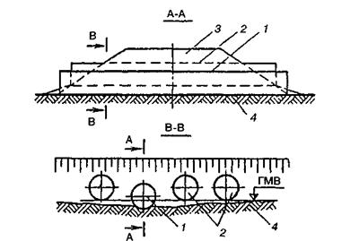
Рис. 4а. Многоочковая металлическая гофрированная труба с расположением очков в разных уровнях:
1 - очко, установленное на отметке русла водотока; 2 - очки, установленные над горизонтом меженных вод; 3 - насыпь; 4 - основание
Рис. 4б. Металлическая гофрированная труба с жестким слоем:
1 - труба; 2 - грунт засыпки; 3 - жесткий слой; D - диаметр трубы; В - ширина жесткого слоя поперек трубы
(Введен дополнительно, Дополнение № 1).
ОСОБЕННОСТИ КОНСТРУИРОВАНИЯ ТРУБ НА ВЕЧНОМЕРЗЛЫХ И ПУЧИНИСТЫХ ГРУНТАХ
4.17. Водопропускные трубы следует проектировать, соблюдая нормы и требования действующих нормативных документов: глав «Основания и фундаменты на вечномерзлых грунтах» и «Земляные сооружения» соответственно II и III частей СНиП, «Технических указаний по изысканиям, проектированию и постройке железных дорог в районах вечной мерзлоты» (ВСН 61-61); «Указаний по проектированию земляного полотна железных и автомобильных дорог» (ВСН 449-72) с учетом свойств грунтов слоя сезонного промерзания (оттаивания) и вечномерзлых грунтов при оттаивании и в соответствии с требованиями настоящей Инструкции.
4.18. Трубы следует проектировать с учетом степени относительного сжатия вечномерзлого грунта основания при оттаивании (табл. 1) и характеристик грунтов слоя сезонного промерзания (оттаивания).
Таблица 1
|
Тип основания, относительное сжатие грунта δ |
Виды грунтов основания |
|
|
I |
Слабосжимаемое (прочное) δ ≤ 0,05 |
Основания, сложенные скальными породами, крупнообломочными и песчаными грунтами, а также глинистыми грунтами твердой и полутвердой консистенции после оттаивания |
|
II |
Среднесжимаемое 0,05 ≤ δ ≤ 0,1 |
Основания, сложенные глинистыми грунтами тугопластичной и мягкопластичной консистенции, а также песчаными или крупнообломочными грунтами при наличии включений прослоев или линз льда |
|
III |
Сильносжимаемое (слабое) 0,1 ≤ δ ≤ 0,4 |
Основания, сложенные глинистыми грунтами текучепластичной и текучей консистенции, а также песчаными или крупнообломочными грунтами с включением прослоев или линз льда; мари с мощностью торфа до 1 м |
|
IV |
Просадочное δ >0,4 |
Участки с наличием подземного льда; мари с мощностью торфа более 1 м |
4.19. Расчеты по прогнозу температурного режима в зоне теплового влияния трубы на периодически действующих водотоках рекомендуется выполнять в соответствии с приложением 13.
Результаты расчетов используются при проектировании оснований труб и фундаментов оголовков.
4.19а. При проектировании труб, располагаемых на вечномерзлых грунтах, для трубы и примыкающих к ней участков насыпи рекомендуется применять один и тот же принцип использования грунтов в качестве основания.
Расчеты по прогнозу температурного режима в основании в зоне теплового влияния трубы следует выполнять в соответствии с дополнениями к приложению 13, приведенными для условий Западной Сибири (см. п. 21 Дополнений).
(Введен дополнительно, Дополнение № 1, 2).
4.20. На вечномерзлых грунтах трубы разрешается применять, как правило, при грунтах I и в отдельных случаях при низкотемпературных грунтах II категории просадочности при условии, что суммарная величина осадки грунтов основания в оттаявшем состоянии может быть компенсирована величиной строительного подъема.
На автомобильных дорогах металлические гофрированные трубы на вечномерзлых грунтах с температурой на глубине 10 м минус 1 °С и ниже, используемых в качестве основания в мерзлом состоянии, допускается применять независимо от категории просадочности грунтов и их мощности.
При этом конструкция трубы должна соответствовать обычным нормам с учетом требований пп. 4.5-4.10 настоящей Инструкции.
(Измененная редакция, Дополнение № 1).
4.21. Расчетная величина осадки и строительного подъема определяется согласно
п. 7 приложения 11 и п. 4.25 настоящей Инструкции.
4.22. При грунтах высокотемпературных1 II категории просадочности и высоко- и низкотемпературных грунтах III и IV категорий просадочности следует разрабатывать индивидуальные проекты труб с учетом величины расчетной осадки и обоснованием принятых решений технико-экономическими расчетами.
1 Грунты, имеющие температуру на глубине нулевых амплитуд (глубина, на которой температура вечномерзлого грунта в течение года остается постоянной) минус 1°С и выше, относятся к высокотемпературным, ниже минус 1°С - к низкотемпературным.
При этом на железных дорогах строительство труб допускается только по согласованию с МПС.
На автомобильных дорогах металлические гофрированные трубы, располагаемые на оттаивающих вечномерзлых грунтах, допускается применять при условии, что суммарная величина осадки грунтов основания может быть компенсирована величиной строительного подъема.
Трубы, располагаемые на оттаивающих вечномерзлых грунтах, допускается применять при условии, что суммарная величина осадки грунтов основания может быть компенсирована величиной строительного подъема.
В необходимых случаях при наличии в основании оттаивающих мерзлых грунтов II - IV категорий просадочности для соблюдения этого уровня следует разрабатывать индивидуальные проекты, предусматривая замену слабых или просадочных при оттаивании грунтов, а также другие меры по уменьшению глубины и неравномерности оттаивания. В случае замены слабых или просадочных при оттаивании мерзлых грунтов работы по отрытию котлована и устройству основания следует выполнять только в зимнее время.
(Измененная редакция, Дополнение № 1, 2).
4.23. Если требуется устройство подушки под трубу, то конструкция ее должна соответствовать схемам, приведенным на рис. 3. Толщину подушки под трубой следует принимать равной 0,3D, но не менее 0,7 м.
На автомобильных дорогах толщину подушки под трубой допускается принимать равной 0,2D, но не менее 0,4 м.
При песчаных грунтах (кроме пылеватых) основания специальная подушка не устраивается.
(Измененная редакция, Дополнение № 1).
4.24. Проектировать трубы следует, как правило, исходя из условия наименьшего нарушения естественного состояния мерзлых грунтов.
Во всех случаях, когда это возможно, металлические гофрированные трубы должны укладываться в тело насыпи без устройства котлованов в мерзлых грунтах.
Следует, как правило, избегать устройства приемных колодцев, глубоких бетонных, железобетонных и других экранов, различных врезок в мерзлые грунты.
Трубы на косогорах при наличии вечномерзлых грунтов следует устраивать по 3-й схеме (см. п. 4.8).
В качестве дополнительных мероприятий для создания наиболее холодного режима в основании и уменьшении глубины и неравномерности оттаивания следует предусматривать покрытие нижней части откосов насыпи (особенно южной экспозиции) на высоту, примерно равную диаметру трубы, слоем или призмой увлажненного торфа толщиной не менее одного метра на длине четырех диаметров трубы в каждую сторону от ее оси (для многоочковых труб - от оси крайнего очка); обеспечивать проветривание трубы в зимний период и другие мероприятия. В условиях большой снегозаносимости (в случаях, когда отверстие трубы полностью заносится снегом) для обеспечения проветривания труб необходимо предусматривать применение вентиляционных труб, концы которых выводятся за пределы снежных отложений, и других устройств, обеспечивающих отвод тепла из трубы в зимнее время.
В условиях большой снегозаносимости для предотвращения попадания снега в трубу необходимо оборудовать концы труб инвентарными крышками. При необходимости сохранения вечной мерзлоты рекомендуется предусматривать применение вентиляционных труб, концы которых выводятся за пределы снежных отложений, и других устройств, обеспечивающих отводы тепла из трубы в зимнее время.
4.25. Строительный подъем назначают, определяя его ординату под осью насыпи по формуле
∆ = 1,25Sр - 0,25iL,
где 1,25 - коэффициент запаса, учитывающий возможную более значительную осадку оттаивающих грунтов; Sр - расчетная осадка; I - уклон трубы; L - длина трубы.
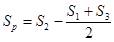
где S1; S2; S3 - осадки соответственно на входе, в средней части и на выходе.
Сопряжение лотка трубы с руслом проектируют с учетом осадок концевых участков.
На оттаивающих в период эксплуатации мерзлых грунтах основания осадка трубы на выходе по условию беспрепятственного отвода воды от нее не должна быть больше допустимой, при которой может быть обеспечено устройство отводящего русла с уклоном не менее 0,002.
4.26. При необходимости замены слабого грунта в основании глубина заменяемого грунта определяется расчетом (с учетом требований пп. 4.10 и 4.23). Замену следует производить дренирующим грунтом. Если крупность частиц дренирующего грунта удовлетворяет требованиям п. 2.5 настоящей Инструкции, то труба укладывается непосредственно на грунт засыпки.
Ширину полосы заменяемого грунта следует назначать в соответствии с указаниями п. 4.10. При необходимости замены в основании оттаивающих мерзлых грунтов III - IV категорий просадочности ширина полосы заменяемого грунта принимается не менее величин, указанных в п. 4.10, и не менее D(n + 2) + l(n - 1), где D - диаметр трубы; n - число очков; l - расстояние в свету между очками.
4.24 - 4.26. (Измененная редакция, Дополнение № 1, 2).
4.27. Грунтовая призма вокруг труб, расположенных на вечномерзлых и пучинистых грунтах, устраивается по обычным нормам согласно п. 4.14 настоящей Инструкции.
4.28. Оголовки, как правило, следует применять бесфундаментных типов с выступающим из тела насыпи торцом трубы, срезанным вертикально или параллельно откосу насыпи. При необходимости увеличения водопропускной способности сооружения рекомендуется использовать многоочковые трубы, трубы большего диаметра или оголовки, приводя необходимые технико-экономические обоснования.
В случае применения оголовков с фундаментами, в том числе на пучинистых грунтах, подошву фундаментов следует закладывать на глубину согласно требованиям пп. 9.6 и 9.7 главы «Основания и фундаменты на вечномерзлых грунтах» II части СНиП.
4.29. Противофильтрационные экраны при всех грунтах основания следует применять из глинощебеночной или цементно-грунтовой смеси глубиной, равной толщине подушки.
4.30. В качестве дополнительного мероприятия по повышению прочности и устойчивости основания трубы и прилегающих участков насыпи в районах с высокотемпературными вечномерзлыми грунтами рекомендуется устраивать на откосах насыпи каменную наброску толщиной 1-1,5 м на длине четырех диаметров трубы в каждую сторону от оси трубы (для "многоочковых труб - от оси крайнего очка) на высоту не менее 1 м над верхом трубы.
ЭЛЕМЕНТЫ КОНСТРУКЦИИ
4.32. Конструкция трубы должна состоять из отдельных элементов - гофрированных листов, изогнутых по заданному радиусу и образующих между собой при соединении продольные (вдоль оси трубы) и поперечные (кольцевые) стыки.
4.33. Для труб с отверстием до 3 м следует применять волнистые листы толщиной 1,5-2,5 мм с гофром 130×32,5 мм. Для труб, строящихся на железных дорогах, минимальную толщину стенки следует принимать 2 мм, а для труб, применяемых в районах с расчетной минимальной температурой воздуха ниже минус 40°С и с вечной мерзлотой, - 2,5 мм.
Допускается по согласованию с заводами-изготовителями гофрированного листа и труб применение гофрированных листов других профилей, если они обеспечивают технологичность холодной прокатки (гофрирования) листа в заводских условиях, плотное соединение листов внахлестку и достаточную жесткость листа, гарантирующую требуемую прочность и устойчивость гибкой конструкции трубы, находящейся в упругой среде.
4.34. При проектировании труб следует учитывать допуски в размерах гофрированного листа по длине и ширине, высоте и длине волны, а также допуски заводского изготовления элементов (на кривизну, диаметр отверстий, расстояния между ними и др.).
Отклонения действительных размеров изготовленных элементов конструкций от проектных не должны превышать значений, указанных в табл. 2.
Таблица 2
|
Допускаемые отклонения, мм |
|
|
Длина гофрированного листа |
±2 |
|
Расстояния между центрами образованных по шаблону со втулками отверстий: |
|
|
Смежных |
±0,7 |
|
крайних в ряду |
±1 |
|
Диаметры отверстий: |
|
|
до 17 мм |
+1; -0 |
|
более 17 мм |
+1,5; -0 |
|
Просвет при подгибке между изделием и шаблоном |
3 |
|
Радиус гибки элементов (просвет между шаблоном длиной по дуге 1,5 м и поверхностью свальцованного листа): |
|
|
в средней части |
2 |
|
по концевым участкам |
6 |
4.35. Основным типом соединения стандартных элементов между собой для труб диаметром 1,5 м и более является стык внахлестку на болтах.
Допускается применение стыков других типов, обеспечивающих равнопрочность с основной конструкцией и технологичность производства монтажных работ.
Для труб диаметром 1-1,5 м на автомобильных дорогах конструкция продольных стыков должна обеспечивать возможность постановки болтов на наружной поверхности трубы (например, фланцевые стыки).
4.36. Конструкция труб должна обеспечивать возможность их укрупненной сборки и последующего объединения отдельных секций из таких же элементов, которые применяются для секций.
4.37. При проектировании труб полезную длину (расстояние между центрами крайних отверстий поперечного стыка) стандартного элемента следует назначать с учетом необходимости обеспечения надежного совпадения отверстий элементов в поперечном стыке и максимально возможного размера элемента.
Номинальные размеры круглых отверстий в продольных стыках должны быть на 3 мм, а в поперечных стыках - на 5 мм больше номинального диаметра болтов.
Отверстия под болты поперечных стыков целесообразно делать овальной формы, вытянутой вдоль длинной кромки листа.
При отверстиях поперечных стыков овальной формы длина элемента может быть увеличена по согласованию в установленном порядке с заводом-изготовителем труб.
В гофрированном элементе с заданной кривизной гребни крайних волн должны быть расположены на его внутренней поверхности.
Поперечные стыки следует назначать конструктивно с однорядным расположением болтов и постоянным расстоянием (шагом) между отверстиями под болты.
Продольные стыки смежных звеньев следует располагать со взаимной сдвижкой на один-четыре шага, принятых для болтов поперечных стыков, и постоянной для каждой отдельной трубы.
4.39. Болты для продольных и поперечных стыков должны быть класса 4.6 и класса 5.6 согласно требованиям главы «Стальные конструкции» II части СНиП. Для труб, применяемых в районах с расчетной минимальной температурой наружного воздуха ниже минус 40°С, болты следует назначать класса 8.8.
4.40. Размеры болтов принимаются по ГОСТ 7798-70*, размеры гаек - по ГОСТ 5915-70*.
Резьба болтов метрическая с крупным шагом согласно ГОСТ 9150-59* и ГОСТ 8724-58*.
4.41. Длина болтов должна назначаться исходя из количества и толщины соединяемых гофрированных листов, но быть не менее 35 мм.
Длина участка без нарезки (у головки болта) должна быть меньше суммарной толщины двух стыкуемых элементов и шайб на 2-3 мм.
4.42. Для болтов стыковых соединений следует применять шайбы специальной формы - квадратные плосковыпуклые и квадратные плосковогнутые (рис. 5) с цилиндрическими опорными поверхностями радиуса кривизны, обеспечивающего плотное прилегание шайб к поверхностям впадин и гребней волн стыкуемых гофрированных листов.
Рис. 5. Шайбы для болтов (размеры в миллиметрах):
а - плосковогнутые; б - плосковыпуклые; d - диаметр отверстия в шайбе (согласно ГОСТ 11371-68*); В - размер квадратной шайбы, принимаемый равным наружному диаметру стандартной круглой шайбы (согласно ГОСТ 11371-68*); δ1 - не менее 3; δ2 - не менее 2
При сферических опорных плоскостях болтов и гаек шайбы не применяются.
ЗАЩИТНЫЕ ПОКРЫТИЯ И ЛОТКИ
4.43. Основным средством защиты металлических труб от коррозии является цинковое покрытие с толщиной слоя не менее 80 мкм по ГОСТ 9791-68, наносимое на внутреннюю и наружную поверхности элементов и отвечающее требованиям п. 5.30 настоящей Инструкции.
4.44. Средства дополнительной защиты металлических труб от коррозии следует назначать на основе данных о коррозионной активности (агрессивности) грунтов основания, насыпи и протекающей через сооружение воды.
4.45. Степень коррозионной активности недренирующих грунтов основания и насыпи по отношению к трубам следует определять по величине удельного электросопротивления грунта (табл. 3).
Таблица 3
|
Более 100 |
100-10 |
Менее 10 |
|
|
Степень коррозионной активности грунта |
Слабоагрессивная |
Среднеагрессивная |
Сильноагрессивная |
Удельное электросопротивление грунта насыпи измеряют в карьере, из которого намечено отсыпать земляное полотно (насыпь).
Удельное электросопротивление поверхностного слоя грунта (если не предусмотрено отсыпать подушку основания) измеряется по оси трубы в местах расположения входного и выходного оголовков.
Удельное электросопротивление грунтов определяется по методике, изложенной в ГОСТ 9.015-74 (приложение 14).
4.46. Оценку степени коррозионной активности протекающей через сооружение воды можно производить на основании величины рН (концентрации водородных ионов) и суммарной концентрации сульфатов и хлоридов (табл. 4).
Таблица 4
|
8,1-11,0 |
8,0-6,0 11,1-12,5 |
Менее 6,0 Более 12,5 |
||||
|
Суммарная концентрация сульфатов и хлоридов, г/л |
Менее 0,5 |
0,5-5,0 |
Более 5,0 |
Менее 0,5 |
0,5 и более |
Любая |
|
Степень коррозионной активности воды |
Слабоагрессивная |
Среднеагрессивная |
Сильноагрессивная |
Среднеагрессивная |
Сильноагрессивная |
Сильноагрессивная |
Измерение величины рН и суммарной концентрации сульфатов и хлоридов производится в соответствии с «Методическими указаниями по химическим анализам грунтов и вод при изысканиях дорог» (М., Минтрансстрой, 1966).
Применение металлических труб на железных дорогах в сильноагрессивных средах не разрешается, а в средах средне-агрессивных допускается по специальному проекту, согласованному с МПС.
В районах тундры и лесотундры Западной Сибири допускается применение металлических гофрированных труб на железных дорогах в среднеагрессивных средах. В этих случаях для каждой железнодорожной линии с МПС согласовывается проект объекта представителя.
(Измененная редакция, Дополнение № 2).
4.47. Дополнительные защитные покрытия труб на автомобильных дорогах и при слабой и средней агрессивности среды на железных дорогах из материалов, указанных в пп. 2.8-2.13. следует наносить на наружную и внутреннюю поверхности элементов или труб. Типы и характеристики покрытий приведены в табл. 5. Внутри трубы устраивается бетонный или асфальтобетонный лоток. Условия применения дополнительных защитных покрытий в зависимости от степени коррозионной активности грунта и воды и расчетных температур воздуха приведены в табл. 6.
(Измененная редакция, Дополнение № 2).
Расчетной отрицательной температурой воздуха согласно п. 1.3 настоящей Инструкции является средняя температура наиболее холодных суток. За расчетную положительную температуру следует принимать абсолютную максимальную температуру наружного воздуха.
Таблица 5
|
Марка покрытия |
Материалы |
Общая толщина покрытия, мм |
Количество слоев |
Толщина каждого слоя, мм |
|
|
Битумные наполненные, послойный набрызгом или кистью |
Б-1 |
Битумная грунтовка |
2,2-2,3 |
1 |
0,2-0,3 |
|
Мастика МБР-65 |
1 |
2,0 |
|||
|
Б-2 |
Битумная грунтовка |
3,7-4,3 |
1 |
0,2-0,3 |
|
|
Мастика МБР-65 |
1 |
2,0 |
|||
|
Битуминоль Н-1 или мастика МБР-90 |
1 |
1,5-2,0 |
|||
|
Б-3 |
Битумная грунтовка |
3,7-4,3 |
1 |
0,2-0,3 |
|
|
Битуминоль Н-2 |
1 |
2,0 |
|||
|
Битуминоль Н-1 или мастика МБР-90 |
1 |
1,5-2,0 |
|||
|
Битумные ненаполненные, погружением |
ПБТ-4 |
Пластбитулен |
2,0 |
1 |
2,0 |
|
БТД-5 |
Битудиен |
1,5 |
1 |
1,5 |
|
|
ПБД-6 |
Пластбитудиен |
2,0 |
1 |
2,0 |
|
|
Полимерные лакокрасочные, пневматическое или безвоздушное распыление |
Э-1 |
Эмали ЭП-1155 или ЭП-5116 |
0,25 - 0,30 |
2 |
0,12 - 0,15 |
|
Э-2 |
Грунт ЭКГ |
0,05 |
1 |
0,05 |
|
|
Краска ЭКК-100 |
0,30 - 0,40 |
2 |
0,15 - 0,20 |
||
|
Э-3 |
Мастика ЭКМ |
0,32 - 0,35 |
2 |
0,160 - 0,175 |
Таблица 5. (Измененная редакция, Дополнение № 1).
Таблица 6
|
Общий показатель степени коррозионной активности грунта и воды* |
Расчетная температура в зоне эксплуатации трубы, °С |
Тип дополнительного защитного покрытия поверхности (применять один из указанных типов) |
|
|
внутренней |
наружной |
||
|
Слабоагрессивная |
До плюс 45 До минус 20 |
- |
Б-2; Б-3 |
|
До плюс 35 До минус 40 |
- |
Б-1** |
|
|
Ниже минус 40 |
Э-1; Э-2; Э-3*** |
||
|
Среднеагрессивная |
До плюс 45 До минус 20 |
БТД-5; ПБТ-4 |
|
|
До плюс 35 |
ПБД-6 |
||
|
До минус 40 |
|||
|
Ниже минус 40 |
Э-1; Э-2; Э-3*** |
||
|
Сильноагрессивная |
До минус 40 Ниже минус 40 |
Э-1; Э-2*** Э-1; Э-2*** |
|
|
* За общий показатель степени агрессивности принимают больший из показателей степени агрессивности грунта и воды. ** С применением мастики МБР-65, изготовленной компаундированием мастики МБР-90. *** Применение в лотковой части не допускается. |
|||
Таблица 6. (Новая редакция, Дополнение № 1).
Окрашивать элементы труб эмалями ЭП-1155 и ЭП-5118 необходимо только в заводских условиях.
(Измененная редакция, Дополнение № 1).
4.48. При укладке труб в насыпях однопутных электрифицированных на постоянном токе железных дорог (кроме раздельных пунктов) коррозионное влияние на них блуждающих токов не учитывается.
При укладке труб в насыпях двухпутных, а также на раздельных пунктах однопутных линий, электрифицированных на постоянном токе железных дорог, следует устраивать электрохимическую защиту с помощью протекторов в соответствии с ГОСТ 9.015-74 и ГОСТ 16149-70. Узлы электрического контакта протекторов с трубой должны быть тщательно изолированы от контакта с грунтом.
Применять протекторы необходимо только в грунтах с удельным сопротивлением до 60 Ом∙м.
Кроме протекторов, независимо от степени коррозионной активности грунта и воды, следует использовать полимерное покрытие типа Э-1 или Э-2 на внутренней и наружной поверхностях трубы.
4.49. Конструкция бетонного или асфальтобетонного лотка в трубах должна отвечать следующим требованиям: толщина лотка над гребнями волн не менее 2 см; угол охвата внутренней поверхности трубы лотком 90-120°.
Использование монолитного литого асфальтобетона допускается лишь как исключение в случае ремонта ранее уложенных лотков.
В лотках из монолитного бетона следует предусматривать дисперсное армирование или армирование металлической сеткой. Ее отгибают на торцах трубы и прикрепляют к 2-3 головкам болтов через каждые 2 м длины трубы.
Для труб, применяемых в районах с расчетной минимальной температурой воздуха ниже минус 40°С, лоток рекомендуется устраивать из блочного асфальтобетона. Гранулометрический состав минеральной части литой песчаной асфальтобетонной смеси следует принимать согласно табл. 7. На автомобильных дорогах при расчетных температурах до минус 40°С допускается применение полимерных или битумно-полимерных материалов.
Таблица 7
|
Содержание (в %) зерен минеральной части асфальтобетонных смесей мельче, мм |
Примерный расход битума (в % по массе) сверх 100% минерального материала |
||||||
|
5 |
2,5 |
1,25 |
0,63 |
0,315 |
0,14 |
0,071 |
|
|
95-100 |
75-90 |
50-67 |
32-50 |
25-35 |
20-27 |
15-20 |
9-12 |
|
- |
95-100 |
52-70 |
33-52 |
30-35 |
22-30 |
15-20 |
9-12 |
4.51. Асфальтобетон, изготавливаемый на месте согласно п. 4.50, должен иметь следующий состав: гравелистый песок до 5 мм или песок до 2 мм - 80-85%, минеральный порошок - 15-20%, битум - 9-12%. При использовании мелкого песка количество минерального порошка и битума следует принимать по верхним пределам.
При определении указанных показателей следует руководствоваться ГОСТ 12801-77, при этом литую асфальтобетонную смесь не уплотняют, а заливают в формы и разравнивают. Образцы могут изготовляться как цилиндрической формы (диаметр 5 см, высота 5 см), так и в виде кубиков 5×5×5 см.
1 При количестве твердых частиц (размером до 15 мм) в потоке до 2% (по объему) и при скорости потока до 2 -3 м/с.
При устройстве лотков труб в районах с расчетной температурой воздуха ниже минус 40°С необходимо, как правило, применять полимерный герметик УТ-38Г.
Полимерный герметик УТ-38Г в состоянии поставки комплектуется из следующих составных частей: герметизирующей пасты по ТУ 38-105874-75 Министерства нефтеперерабатывающей и нефтехимической промышленности СССР; каменноугольной смолы вторичной переработки (препарированной) по ТУ 14-6-83-72 Министерства черной металлургии СССР; вулканизирующего агента - бихромата натрия в виде водного раствора 67%-ной концентрации.
Битумно-бутилкаучуковая мастика МББГ-70 должна отвечать требованиям ТУ 21-27-40-74 Министерства промышленности строительных материалов СССР.
На автомобильных дорогах III - IV категорий трубы на водотоках при малом количестве твердых частиц в потоке (до 1 % по объему и до 2 мм по размеру) и малой скорости его (до 3 м/с) допускается проектировать без устройства специальных защитных лотков, предусматривая нанесение на внутреннюю поверхность лотковой части трубы полимерных защитных покрытий марки Э-1.
На железных дорогах трубы на водотоках при малом количестве твердых частиц в потоке (до 1 % по объему и до 2 мм по размеру) и малой скорости его (до 2 м/с) допускается проектировать без устройства специальных защитных лотков, предусматривая нанесение на внутреннюю поверхность лотковой части трубы полимерных защитных покрытий марки Э-1.
(Измененная редакция, Дополнение № 1, 2).
4.54. При строительстве труб на постоянных водотоках под автомобильными дорогами лоток следует устраивать из асфальтобетонных или бетонных блоков или предусматривать другие меры (применение износостойких материалов, армирование и др.).
Строительство труб на постоянных водотоках не допускается, если для устройства или ремонта лотка невозможно отвести поток в рядом расположенное сооружение или другим путем предотвратить доступ воды в трубу после полного возведения насыпи.
4.54а. При применении металлических гофрированных труб на дорогах ниже IV категории допускается, при соответствующем технико-экономическом обосновании, укладку труб производить на естественное основание без устройства специальных грунтовых подушек и противофильтрационных экранов, предусматривая подготовку основания подсыпкой с ее планировкой, а также без нанесения дополнительных защитных покрытий (или с нанесением покрытий облегченной конструкции) и без устройства лотков. При засыпке трубы необходимо обращать внимание на качественное уплотнение грунта рядом с ней. Толщина засыпки над трубой должна быть не менее 0,5 м.
(Введен дополнительно, Дополнение № 1).
4.54б. Укрепление русла и откосов насыпи у труб в случае ожидания значительных просадок необходимо производить каменной наброской, а в других случаях - допускается применять плитные или решетчатые конструкции.
Крепление на мелких песках должно производиться с устройством обратного фильтра из геотекстильных материалов.
(Введен дополнительно, Дополнение № 2).
5. ПРАВИЛА ПРОИЗВОДСТВА И ПРИЕМКИ РАБОТ
ОБЩИЕ ПОЛОЖЕНИЯ
Строительство труб следует осуществлять специализированными бригадами, которые выполняют все работы по возведению сооружения и по мере окончания их переходят с объекта на объект.
Рекомендуемые машины и инструменты для оснащения бригад приведены в приложении 15.
Сооружение труб при отсутствии грунтоуплотняющих машин и ручных механизированных трамбовок не допускается.
Рекомендуется создание сквозных комплексных специализированных бригад, выполняющих весь объем работ по постройке гофрированных труб на участке данного треста или управления с обеспечением их необходимыми машинами, механизмами, инструментами и приборами. Такая бригада, созданная в одном из строительных подразделений, должна выполнять работы на участках этого и других подразделений, используя вахтовый или другие методы организации строительства.
Сооружение труб необходимо производить сквозными комплексными специализированными бригадами, выполняющими весь объем работ при постройке гофрированных труб на участке данного треста или управления с обеспечением их необходимыми машинами, механизмами, инструментами и приборами. Такая бригада, созданная в одном из строительных подразделений, должна выполнять работы на участках этого и других подразделений, используя вахтовый или другие методы организации строительства.
Рабочие и инженерно-технические работники должны пройти специальное обучение и сдать экзамены на знание комплекса работ по строительству металлических гофрированных труб.
5.2. Сооружение труб при отрицательной температуре воздуха, а также при положительной температуре воздуха и наличии вечномерзлых грунтов следует осуществлять по утверждаемому в установленном порядке проекту производства работ. Строительство должно производиться в кратчайшие сроки без перерыва в выполнении следующих отдельных основных операций и всех работ в целом;
рытье котлована;
отсыпка подушки на полную ее высоту;
установка смонтированной трубы;
устройство грунтовой призмы до уровня горизонтального диаметра.
При постройке труб на вечномерзлых грунтах, кроме того, следует предусматривать выполнение работ по сооружению трубы и насыпи около нее по возможности в конце зимы или весной; не допускать уничтожения мохорастительного покрова; не допускать проезда транспорта и строительных машин вне подъездных дорог; подъездные дороги к трубам устраивать путем подсыпки грунта толщиной в зависимости от нагрузки от транспортных и строительных машин, но не менее 0,5 м; обеспечивать беспрепятственный отвод поверхностных вод; не допускать скопления воды вблизи трубы; местные понижения заполнять грунтом согласно указаниям п. 4.31.
При постройке труб на вечномерзлых грунтах, кроме того, следует:
выполнять работы по сооружению трубы и насыпи около нее по возможности в конце зимы или весной;
не допускать уничтожения мохорастительного покрова;
не допускать проезда транспорта и строительных машин вне подъездных дорог;
устраивать подъездные дороги к трубам путем подсыпки грунта толщиной в зависимости от нагрузки от транспортных и строительных машин, но не менее 0,5 м;
обеспечивать беспрепятственный отвод поверхностных вод;
не допускать скопления воды вблизи трубы;
заполнить грунтом местные понижения согласно указаниям п. 4.31.
5.1, 5.2. (Измененная редакция, Изм. № 1, 2).
5.3. При приемке построенного сооружения должна быть предъявлена следующая документация: чертежи трубы, на которые нанесены согласованные изменения; акты освидетельствования и акты промежуточной приемки ответственных конструкций и скрытых работ (устройство оснований, монтаж конструкций, устройство дополнительного защитного покрытия и лотков, грунтовая обсыпка труб); акт освидетельствования трубы в целом; паспорт на поставленные строительные стальные конструкции; документы о согласовании допущенных при строительстве отступлений от проекта; сводная ведомость указанных документов.
До приемки скрытых работ и ответственных конструкций запрещается производить последующие работы (например, установку трубы на непринятую грунтовую подушку или засыпку трубы с непринятым дополнительным защитным покрытием).
ТРАНСПОРТИРОВАНИЕ ЭЛЕМЕНТОВ И КОНСТРУКЦИЙ ТРУБ
На полигонах должны быть организованы площадки для складирования элементов, сборки секций труб, устройства дополнительного защитного покрытия и лотков, с которых конструкции доставляют на строительные площадки.
На перевозку секций тем или иным транспортом составляется проект. Пример схемы размещения и крепления секции на автомобиле приведен в приложении 16.
5.6. Притрассовые производственные предприятия, на которых производится сборка секций труб, следует размещать из расчета доставки автотранспортом или тракторами на объекты готовых секций, укомплектованных стандартных элементов и крепежа.
5.7. При перевозке металлоконструкций необходимо принимать меры против повреждения цинкового и дополнительного покрытий и предотвращения деформации элементов (см. пп. 5.8-5.12).
Погрузку и разгрузку элементов конструкции и пакетов следует производить кранами с применением специальных стропов и траверс. Подъем элементов или пакетов со строповкой за отверстия запрещается.
Запрещается сбрасывать элементы или пакеты из них и секции труб с транспортных средств.
Секции и звенья труб разрешается перекатывать по горизонтальной площадке.
5.9. Складирование пакетов гофрированных элементов должно обеспечивать удобство строповки и осмотра их. Пакеты элементов следует укладывать вертикально (на ребро) в штабеля с применением деревянных прокладок; в штабель укладывать не более трех рядов пакетов.
Замкнутые секции труб следует укладывать по высоте не более чем в три ряда на деревянные круглые подкладки и прокладки, располагаемые поперек труб. В каждом ряду крайние секции должны быть закреплены.
Элементы с дополнительным битумным покрытием, нанесенным в заводских или полигонных условиях, следует комплектовать в пакеты по 10-12 шт., помещая между ними прокладки, например, из жгута гернита диаметром 3-4 см (по ГОСТ 5.1011-71).
5.10. Пакеты элементов в железнодорожный подвижной состав следует устанавливать в вертикальном положении (на ребро) не более чем в два ряда, применяя необходимое крепление и прокладки.
Пакеты гофрированных элементов необходимо грузить на автомашины в один ряд, устанавливая их на ребро, между пакетами укладывать прокладки из досок или брусьев.
5.11. Погрузку секций на автомашины и разгрузку их следует осуществлять автомобильным краном. Строповку секций необходимо производить пеньковым канатом или тросом с прокладкой из брезента или другого материала, исключающего возможность повреждения цинкового и дополнительного защитного покрытия.
При температуре воздуха свыше плюс 30°С во избежание оползания битумного защитного покрытия секции перед транспортированием или после монтажа до засыпки следует наносить на него на притрассовом производственном предприятии защитный слой из цементного молока (кистью или распылением).
5.13. Перевозка и монтаж сборных бетонных и железобетонных конструкций оголовков и противофильтрационных экранов должны осуществляться в соответствии с требованиями «Технических указаний по изготовлению и постройке сборных железобетонных водопропускных труб (ВСН 81-62)».
УСТРОЙСТВО ОСНОВАНИЯ
5.15. Работы по подготовке основания включают:
вырезку котлована под подушку бульдозером или
экскаватором (в скальных
грунтах - взрывным способом);
транспортировку грунта к месту укладки автотранспортом;
послойную отсыпку подушки под трубу и уплотнение грунта (или подготовку естественного основания) грунтоуплотняющими машинами;
вырезку ложа под трубу приспособленной для этой цели машиной (например, грейдером, оборудованным специальным ножом) или вручную по шаблону.
При уплотнении грунта пневмокатками толщину слоя следует принимать 0,2 м.
После уплотнения подушки следует отсыпать нулевой слой грунта и уплотнять его, используя те же машины и ту же технологию, что и при устройстве подушки.
Если труба устанавливается непосредственно на подушку, то поверхности подушки придается требуемый строительный подъем.
Правильность строительного подъема (величиной согласно п. 3.6) контролируется нивелировкой не менее чем в трех точках: под осью пути и концами трубы.
5.17. Если проектом предусмотрена отсыпка нулевого слоя грунта на предварительно уплотненное основание, то последнее в этом случае должно быть уплотнено на ширине не менее 4 м для одноочковых труб и не менее D×п+l(п-1)+2 для многоочковых труб по той же технологии, что и подушка (пп. 5.14 и 5.16).
Рис. 6. Схема установки шаблона для вырезки грунтового ложа в нулевом слое:
1 - шаблон; 2 - деревянные брусья; 3 - нулевой слой; 4 - уровень верха подушки (не должен превышать нижней отметки грунтового ложа)
5.18. При устройстве основания согласно рис. 3, б и в в нем необходимо вырезать ложе под трубу, размеры которого должны отвечать требованиям п. 4.9 настоящей Инструкции.
Вырезку ложа следует производить автогрейдером марки Д-557, оборудованным профилированным ножом (по предложению ЦНИИС), или начерно экскаватором с последующей отделкой вручную по шаблону. Шаблон может быть изготовлен из листовой стали, досок или фанеры. Радиус криволинейной кромки шаблона должен быть равен радиусу трубы по средней линии гофров.
Шаблон следует устанавливать на два деревянных направляющих бруса, уложенных по обе стороны продольной оси трубы строго по нивелиру с учетом образования строительного подъема лотка трубы (рис. 6). Перемещая шаблон по брусьям и вырезая грунт, создают ложе, в которое затем устанавливают гофрированную трубу. Отклонения профиля грунтового ложа от шаблона не должны превышать 2-3 см.
Контроль правильности продольного профиля ложа под трубу (устройства строительного подъема) осуществляется согласно п. 5.16 настоящей Инструкции.
5.19. После установки трубы в проектное положение на спрофилированное ложе следует производить подсыпку грунта в зазоры между поверхностью нижней части трубы и грунтовым ложем и его уплотнение, используя ручные деревянные штыковки диаметром не более 8 см, и дополнительную подсыпку грунта в нижние четверти (до охвата трубы грунтом не менее 120°) с уплотнением ручными электротрамбовками и подштыковкой. Электротрамбовки при уплотнении грунта размещаются на расстоянии 5 см от гребней гофров, а штыковки - во впадинах гофров.
Далее нулевой слой непосредственно возле трубы следует доуплотнить машиной с виброударным рабочим органом за один-два прохода машины вдоль стенок трубы. В случае использования для уплотнения грунта пневмокатков доуплотнение нулевого слоя возле стенок трубы следует производить ручными электротрамбовками ИЭ-4505.
Если трубу устанавливают на плоское основание, то после этого следует подсыпать грунт в нижние четверти трубы с уплотнением ручными электротрамбовками и штыковкой до охвата трубы грунтом не менее чем на 120°. Последующее уплотнение грунта возле трубы производят так же, как при спрофилированном ложе.
5.20. При устройстве основания в зимнее время разрешается применять только талый (сухой, несмерзшийся) грунт и уплотнять его трамбующими машинами по мере отсыпки, не допуская смерзания в рыхлом состоянии.
При строительстве труб на сезонно-мерзлом естественном основании без устройства подушки грунт основания должен быть оттаян на глубину не менее 0,4 м и затем уплотнен трамбующей машиной согласно требованиям п. 5.17 настоящей Инструкции.
Контроль плотности грунтовой подушки, укладываемой взамен слабого грунта основания (см. п. 4.26), осуществляется под осью пути через каждые 0,5 м высоты подушки. Количество проб должно быть не менее двух в каждой точке.
Плотность песчаных грунтов контролируется прибором Ковалева, а щебенисто-галечниковых и дресвяно-гравийных - методом лунок (приложение 17).
Результаты контроля заносятся в акт на скрытые работы (см. приложение 2).
5.22. Котлованы под противофильтрационные экраны следует отрывать параллельно с подготовкой котлована под подушку и после удаления воды заполнять (в зависимости от требований проекта) бетоном, глино-щебеночной или цементно-грунтовой смесью (приложение 18) с послойным уплотнением электротрамбовками. Цементно-грунтовая смесь предусмотренного проектом состава должна отвечать требованиям настоящей Инструкции.
5.23. По окончании подготовки основания трубы составляют акт по форме, приведенной в приложении 2.
МОНТАЖ
Общие положения
5.24. В зависимости от местных условий монтировать трубу с болтовыми стыками внахлестку на строительной площадке следует из секций, предварительно собираемых из отдельных элементов на полигонах, или из отдельных элементов.
Во всех случаях, когда возможна доставка секций труб на объект автотранспортом или тракторами и установка их краном, особенно в районах с расчетной минимальной температурой наружного воздуха ниже минус 40°С, способ монтажа из секций должен быть основным. При этом рекомендуется производить монтаж труб «с колес», устанавливая секции сразу в проектное положение после подъема с транспортных средств.
Длину секций следует назначать исходя из заданных проектных длин водопропускных труб. В связи с этим на одном сооружении возможно применение секций различной длины. При назначении длин секций труб необходимо учитывать возможности имеющихся транспортных средств для перевозки конструкций на строительную площадку. В промежуточных секциях число звеньев должно быть нечетным. Длину секций рекомендуется принимать не более 10 м.
5.25. Сборку труб следует осуществлять согласно монтажной схеме, имеющейся в проекте производства работ. Монтажная схема должна предусматривать: порядок установки гофрированных элементов при сборке и объединении секций, порядок перевозки секций, порядок установки болтов, схему специальных стяжек и подмостей для крепления труб диаметром более 2 м в поперечном сечении во время сборки.
5.26. При монтаже труб следует использовать комплект инструментов: торцевые ключи, ломики, крюки с кольцами, электрические или пневматические гайковерты, молотки (см. приложение 15).
В комплект поставляемых на строительную площадку болтов должны входить 10 монтажных болтов длиной 75 мм того же диаметра, что и рабочие болты. Эти болты следует применять для временной стяжки гофрированных листов, и они не должны оставаться в конструкции.
5.27. Проект производства работ должен учитывать особенности установки металлоконструкций в проектное положение в зависимости от верхнего очертания подушки под трубу. При основании, спланированном без устройства ложа (см. рис. 3, а), допускаются монтаж трубы рядом (параллельно проектной оси сооружения) и последующая накатка ее в проектное положение. При спрофилированном ложе основания трубу следует устанавливать краном.
5.29. Монтаж труб с монолитными или сборными оголовками должен начинаться со сборки фундаментной части низового оголовка с последующей укладкой металлических конструкций сооружения (секций, элементов) и завершением устройства оголовков.
При отбраковке элементов и крепежа следует проверять маркировку элементов, геометрические размеры элементов и крепежа, качество защитного покрытия.
На каждом гофрированном листе на внутренней его поверхности у второго ряда отверстий для продольного стыка на первом выпуклом гофре должны быть указаны марки стали, элемента и клеймо ОТК завода и заводского инспектора Главмостроя. Марка элемента условно обозначает диаметр трубы и толщину листа. На каждом пакете гофрированных элементов должна быть бирка с указанием марки элемента, марки стали, толщины элемента, диаметра трубы, завода-изготовителя и года выпуска (см. приложение 1). Геометрические размеры элементов конструкции и крепежа должны отвечать требованиям проекта и настоящей Инструкции.
Поверхность цинкового защитного покрытия труб не должна иметь видимых трещин, забоин, наплывов на стыкуемых поверхностях и мест, не покрытых цинком. Использование элементов с указанными дефектами не допускается. Дефекты защитного покрытия устраняются заводом-изготовителем.
Качество дополнительного защитного полимерного покрытия (наносится в заводских условиях) должно отвечать требованиям, указанным в приложении 10.
5.31. До установки элементов для обеспечения необходимого зазора в болтовых отверстиях следует заранее оплавить в них избыток удержавшейся битумной мастики с помощью оправок эталонного диаметра, нагретых до температуры плюс 130°С.
Соприкасающиеся поверхности элементов и крепежа необходимо очистить от грязи и посторонних частиц.
Сборка секций на полигоне
5.32. Перед сборкой секций выполняются подготовительные работы: размещаются пакеты с гофрированными элементами, окаймляющие уголки, ящики с крепежом, необходимый инструмент и, если требуется, передвижная электростанция и компрессор.
5.33. Рекомендуемая последовательность установки элементов при сборке секций приведена на рис. 7. Вначале необходимо собрать звенья в вертикальном положении (элементы устанавливаются на ребро) с постановкой ограниченного числа болтов (3-4 болта) в середине продольных стыков. При этом один торец элемента должен находиться на наружной поверхности звена, а другой - на внутренней. Во втором ряду продольного стыка не должно быть отверстий на наружных гребнях волн (рис. 8 и 9); в правильно собранных звеньях труб все марки элементов должны быть видны. Затем звенья необходимо последовательно устанавливать в горизонтальное положение на деревянные брусья, уложенные вдоль секций трубы так, чтобы продольные стыки в них были на одном уровне, а расположение нахлеста элементов в соединяемых звеньях было строго одинаково.
В секцию звенья объединяются стандартными элементами. При установке этих элементов в местах стыковки трех листов не допускается соприкасание двух листов, входящих в одно звено. Поэтому каждый соединительный элемент одним торцом вводят в зазор между элементами ранее собранных звеньев А и Б (см. рис. 7).
Рис. 7. Последовательность сборки секции трубы отверстием 1,5 м из отдельных звеньев (вид с торца):
а - величина сдвижки продольных стыков (см. п. 4.38), цифрами показан порядок установки элементов при объединении звеньев А и Б
Продольные стыки в звеньях следует располагать с перевязкой - взаимной сдвижкой на величину а, равную одному - четырем шагам отверстий поперечных стыков. Величину сдвижки для каждой отдельной трубы принимать постоянной.
5.34. При установке соединительных элементов (сборке секций и их объединении) болты в количестве 3-4 шт. следует наживлять вначале в средних частях продольных и поперечных стыков. Остальные устанавливаются после объединения в секцию необходимого количества звеньев. Последними ставятся болты в местах соединения трех элементов.
5.35. Затягивать болты следует электрическими гайковертами ИЭ-3101 или пневматическими ИП-3103, а также торцевыми и накидными гаечными ключами.
Рис. 8. Схема размещения болтов продольного стыка:
1, 2 - соответственно 1-й и 2-й ряды болтов внутреннего листа
Допускается применение других электрических гайковертов небольшой массы (2-3 кг), обеспечивающих величину момента затяжки 15-20 кгс×м.
При затяжке болтов необходимо следить за правильностью положения плосковыпуклых и плосковогнутых шайб.
5.36. При сборке секций труб болты в продольных стыках следует ставить на расстоянии не менее 15 см от торцов концевых звеньев секции. Поставленные в концевых звеньях болты не должны затягиваться, чем облегчается постановка стандартных элементов с заведением их в зазоры продольных стыков между элементами торцевых звеньев.
Рис. 9. Схема соединения двух секций соединительными элементами:
1, 2, 3 - номера и последовательность установки соединительных элементов; А, Б - торцы соединяемых секций; а - величина шага сдвижки продольных стыков
Монтаж труб из секций
5.37. Перед началом работ следует подготовить элементы согласно п. 5.30), предназначенные для соединения секций, крепеж, а также доставить необходимые инструменты и оборудование.
5.38. Монтаж трубы следует осуществлять на спланированном основании либо рядом (вблизи проектной оси трубы). Секции укладывают на деревянные брусья для беспрепятственной постановки болтов в нижней части.
5.39. Секции в проектное положение, как правило, следует устанавливать краном. При строповке секций должны быть приняты меры, исключающие возможность повреждения защитного покрытия. Стропы размещают на расстоянии четверти длины секции от их торцов.
5.40. Объединение секции следует производить согласно схеме, приведенной на рис. 9. Вначале торцы секций автомобильным краном устанавливают так, чтобы продольные стыки были расположены на одном уровне, затем устанавливают соединительные элементы.
Сборка труб из отдельных элементов
5.41. Перед началом монтажа трубы должны быть выполнены все подготовительные работы (см. пп. 5.28, 5.30 настоящей Инструкции).
Если на месте строительства трубы рядом с подготовленным основанием отсутствует ровная площадка, то для сборки трубы следует подготавливать легкие деревянные подмости, располагая их вблизи проектной оси трубы.
5.42. Сборку трубы рекомендуется осуществлять по одной из двух принципиальных схем (рис. 10).
По первой схеме трубу следует наращивать стандартными элементами постепенно (цифрами показана последовательность их установки). Элементы переносят и удерживают в необходимом положении специальными крюками. Центрировку отверстий в элементах для установки болтов осуществляют оправками, вставляя их в отверстия, расположенные рядом с отверстиями, в которые вставляют болт. При установке элементов в местах нахлеста трех листов не допускается соприкасание двух листов, входящих в одно звено. Сборку следует производить с установкой минимального количества болтов: вначале ставят 2-3 болта на средних участках продольных и поперечных стыков, после чего производят стяжку в местах соединения трех элементов длинными монтажными болтами, которые затем заменяют обычными. После наживления болтов в звене из элементов 11 и 12 продолжают сборку следующего участка трубы, а в звене из элементов 5 и 6 производят установку и затяжку всех болтов.
Рис. 10. Монтажная схема трубы отверстием 1,5 м (вид с торца):
а - величина сдвижки продольных стыков; цифрами показан порядок установки элементов при сборке трубы
По второй схеме вначале выкладывают нижние элементы на всю длину трубы, объединяя их болтами в средней части. Затем устанавливают по два других элемента звеньев через одно звено (см. рис. 10, цифры в скобках). Далее последовательно монтируют оставшиеся элементы пропущенных звеньев, завершая монтаж постановкой и затяжкой всех болтов.
Между звеном, в котором затягивают все болты, и собираемым звеном должно быть не менее трех звеньев с наживленными болтами.
5.43. При монтаже труб на строительной площадке могут быть осуществлены также предварительная сборка звеньев и последующее их объединение. Для труб диаметром 2 м и более такая технология сборки является предпочтительной.
Звенья собирают на специально подготовленной площадке с деревянным настилом в непосредственной близости от сооружаемой трубы. Собранные звенья устанавливают краном на основание, подкладывая под каждое звено деревянные брусья и ориентируя их вдоль трубы (после установки и затяжки всех болтов брусья из-под трубы удаляют).
При сборке труб диаметром более 2 м проектом должны быть предусмотрены переносные подмости для монтажников. Для труб диаметром 3 м устраивают подмости внутри трубы высотой 1,3 м и размером в плане 2×2 м, а также наружные подмости (два комплекта) высотой 1,5 м и размером в плане 1×2 м; при сборке труб диаметром 2 м подмости устраивают высотой 0,5-0,8 м.
5.44. Окаймляющие уголки устанавливают, когда в продольных стыках торцевых звеньев трубы болты, расположенные на расстоянии 0,3-0,5 м от торцов, не затянуты.
5.45. Приемка смонтированной трубы должна быть оформлена актом (см. приложение 3).
УСТРОЙСТВО ДОПОЛНИТЕЛЬНОГО ЗАЩИТНОГО ПОКРЫТИЯ
5.46. Дополнительное защитное покрытие металлоконструкций труб выполняется с применением битумных наполненных и ненаполненных мастик, полимерных лакокрасочных материалов или эмалей в соответствии с требованиями проекта и настоящей Инструкции.
5.47. Наполненные битумные мастики наносят на секции труб на притрассовых производственных предприятиях (полигонах), где производится сборка секций. Нанесение покрытия на строительной площадке не допускается.
5.48. Ненаполненные битумные мастики должны наноситься на элементы или звенья труб способом погружения в заводских условиях или в крытых помещениях на полигонах
5.49. Полимерные лакокрасочные материалы и эмали должны наноситься на элементы только в заводских условиях с соблюдением требований, изложенных в приложении 10.
5.50. На строительной площадке битумной наполненной мастикой покрывают только незащищенные концы секций, соединительные элементы и дефектные места, появившиеся в покрытии при транспортировании и сборке секций.
5.51. В зимних условиях допускается нанесение битумных заполненных мастик на соединительные элементы, незащищенные концы секций и дефектные места при температуре воздуха не ниже минус 20°С. При этом поверхности следует подогревать до температуры 40-50°С газовоздушными горелками типа ГВПИ или ГВПЛ (однофакельными или многофакельными). Очистку труб, нанесение на них грунтовки и защитного слоя покрытия следует производить под прикрытием переносных навесов.
5.52. Битумную грунтовку и наполненные мастики следует применять, как правило, заводского производства. Допускается приготовлять их на полигонах, где осуществляется сборка секций труб.
Нанесение битумных наполненных мастик
5.53. Наполненные мастики (битумно-резиновые и битумно-минеральные) наносят на поверхность секций труб, покрытых битумной грунтовкой.
5.54. Битумную грунтовку следует приготовлять согласно требованиям п. 4 приложения 9.
Грунтовку следует хранить в герметически закрытых сосудах (бочках, бидонах, флягах и др.) в огнестойком помещении не ближе 5 м от источников огня. Загустевшую при хранении битумную грунтовку следует разжижать бензином. Бензин добавляют в количестве, необходимом для получения битумной грунтовки требуемой вязкости.
5.55. Перед нанесением грунтовки поверхность секций или труб следует очистить от грязи, пыли, наледи, масляных и нефтяных пятен. Твердые наслоения снимают металлическими щетками, лед удаляют газовоздушными горелками, нефтяные пятна снимают ветошью, смоченной в бензине. Очищенную поверхность осушают с помощью газовоздушных горелок.
Грунтовку наносят с помощью установки, состоящей из емкости с грунтовкой и распыляющей пневмофорсунки. Рекомендуется установка с передвижным компрессором типа КСЭ-6М или О-38Н и красконагнетательными баками типа С-764, С-411А или С-865 Вильнюсского завода строительно-отделочных машин Минстройдормаша СССР.
Установку комплектуют шлангами диаметром 9 мм с краскораспылителями типов О-45 и С-592. Грунтовка наносится методом распыления сжатым воздухом. Различные головки, придаваемые пистолету, обеспечивают получение факелов разных форм и размеров и выполнение соответствующих объемов работ (см. приложение 15).
Для той же цели допускается применение агрегатов типа С-562 или С-562А Вильнюсского завода строительно-отделочных машин.
Грунтовку на отдельные места трубы на строительной площадке допускается наносить кистью.
5.57. Битумно-резиновая мастика поставляется промышленностью или изготавливается на месте согласно пп. 1 и 2 приложения 9.
Перед применением битумно-резиновой мастики марки МБР-90 или МБР-65, поставляемой промышленностью, ее измельчают, загружают в варочные котлы, расплавляют и доводят до температуры 180-200°С.
5.58. На гофрированные поверхности труб битумно-резиновую мастику марки МБР-65 следует наносить механизированным способом преимущественно с пневмораспылением ее. Нанесение ее может быть осуществлено с помощью передвижной битумной установки ПКБ Главстроймеханизации (см. приложение 15).
Для получения равномерного слоя толщиной 2 мм мастика, транспортируемая по шлангу, должна наноситься форсункой, удаленной от поверхности не менее чем на 0,5 м и не более чем на 1,5 м.
5.59. При ремонте покрытия битумно-минеральные мастики (битуминоли) марок Н-1 и Н-2, а также битумно-резиновую мастику марки МБР-90, приготовленные согласно требованиям пп. 1-3 приложения 9, можно наносить на гофрированные поверхности металлических труб способом подливки. Горячая мастика подается из лейки и сразу же разравнивается путем перемещения расплава вдоль гофра профилированными шпателями (см. приложение 15, п. 16).
Дополнительное защитное покрытие стыков следует производить такими же материалами, которыми защищены элементы трубы.
5.60. В процессе нанесения на трубу защитных покрытии при температуре воздуха ниже 30°С рабочая температура разогретой битумной мастики должна быть в пределах 160-180°С, а при температуре воздуха выше 30°С температуру битумной мастики снижают до 150°С.
5.61. Дополнительное защитное покрытие (грунтовка, мастика), начатое на отдельном участке трубы, необходимо полностью закончить в течение рабочего дня. Покрытие следует наносить послойно; каждый слой мастики должен наноситься на застывший предыдущий слой. На внутреннюю поверхность трубы защитное покрытие следует наносить после завершения работ на наружной поверхности трубы.
5.62. На секциях труб, покрываемых наполненными мастиками типа Б-1, Б-2 или Б-3, следует оставлять без защитного покрытия полосы шириной 100-150 мм на наружной и внутренней поверхностях торцов для удобства установки на строительной площадке соединительных элементов.
Если секции труб покрыты указанными наполненными битумными мастиками, то соединительные элементы, включая поперечные и продольные стыки, должны быть защищены такими же мастиками после монтажа конструкций.
Битумные покрытия из ненаполненных мастик
5.63. Ненаполненные битумные мастики (пластбитулен, битудиен и пластбитудиен) следует изготовлять в заводских условиях или на полигонах стройбаз в открытых битумно-плавильных котлах (типа УБК) с соблюдением следующих технологических приемов. Битум нефтяной (БН-IV или БНИ-IV) или пластбит дробят на куски массой до 5 кг и загружают в варочный котел, в котором его расплавляют, обезвоживают и доводят до температуры 150-160°С. В битумный расплав, доведенный до указанной температуры, вводят добавки: зеленое масло и полиэтилен при изготовлении пластбитулена и полидиен при изготовлении битудиена и пластбитудиена. Введение указанных добавок должно сопровождаться кратковременным (20-30 мин) интенсивным перемешиванием смеси, обеспечивающим гомогенность приготовленной битумной мастики.
5.64. Нанесение ненаполненных мастик (пластбитулена, битудиена и пластбитудиена) способом погружения в их расплав элементов или секций труб (если объединение последних предусмотрено бандажами) на заводах или полигонах должно производиться в специальных обогреваемых емкостях. Эти емкости должны быть снабжены подъемно-транспортными, средствами для перемещения, загрузки и извлечения указанных элементов или секций. Загружать в емкости следует элементы, прикрепленные к специальным траверсам (с использованием болтовых отверстий) или размещенные в специальных контейнерах; секции загружают с применением специальных траверс.
Продолжительность выдержки элементов и секций в расплаве битумной мастики устанавливают с учетом количества одновременно погружаемых элементов и температуры, необходимой для полного прогрева элементов.
Дополнительную защиту от коррозии крепежа следует осуществлять также способом погружения. Для этого болты с навернутыми на концевую часть их резьбы гайками и отдельно шайбы погружают в битумную грунтовку. В качестве грунтовки используется раствор из ненаполненных мастик (пластбитулена, битудиена или пластбитудиена) в соответствующем бензине (см. п. 4 приложения 9).
5.65. Расход материалов на устройство дополнительных битумных защитных покрытий различных типов приведен в табл. 9 приложения 9.
5.66. Качество защитного покрытия оценивают внешним осмотром, измерением толщины, проверкой сплошности и сцепления покрытия с металлом.
При внешнем осмотре покрытия следует убедиться в отсутствии трещин, бугров, вздутий, впадин и расслоений.
Толщина покрытия должна контролироваться индукционными или магнитными толщиномерами (типа ИТП-1) через каждые 10 м не менее чем в четырех точках по окружности трубы и во всех местах, вызывающих сомнение.
Сплошность покрытия трубы следует проверять искровым дефектоскопом, например, марки ДИ-64 (напряжением 12000 В для изоляции толщиной 2-4 мм) или электрическим дефектоскопом марки ЭД-4.
Сцепление покрытия с поверхностью трубы следует проверять адгезиометром. При проверке покрытие не должно отслаиваться от поверхности трубы. Сцепление определяется по торцам и в середине трубы (в каждом случае не менее чем на трех точках), а также выборочно по требованию заказчика. Выявленные дефектные места и повреждения должны быть восстановлены и подвергнуты повторной проверке.
5.67. После окончания работ по устройству дополнительного защитного покрытия должен быть составлен акт согласно приложению 4.
ЗАСЫПКА ТРУБ
5.69. Засыпку труб следует вести с опережением возведения земляного полотна. Необходимость оставления в насыпях прогалов для строительства труб должна быть обоснована проектом, при этом ширину прогала (в свету) по низу следует назначать из расчета обеспечения расстояния между основанием откоса насыпи и стенкой трубы на уровне горизонтального диаметра не менее 4 м.
5.70. Устройство грунтовой призмы труб следует производить грунтами, перечисленными в пп. 2.5 и 2.6, в соответствии с «Техническими указаниями по технологии сооружения железнодорожного земляного полотна» (ВСН 186-75, раздел 9) и требований пп. 5.68-5.84 настоящей Инструкции. Степень уплотнения грунта в пределах призмы с размерами, указанными на рис. 4, должна быть не ниже 0,95 максимальной стандартной плотности.
Рис. 11. Схема засыпки и уплотнения грунта наклонными слоями
5.71. Процесс устройства грунтовой призмы у трубы должен включать следующие виды работ:
транспортировку грунта из карьера или резерва к трубе автосамосвалами или скреперами;
разравнивание грунта бульдозером слоями заданной толщины;
послойное уплотнение грунта грунтоуплотняющими машинами, а в непосредственной близости от трубы - ручными механизированными трамбовками;
штыковку грунта в гофрах трубы;
контроль плотности засыпки согласно п. 5.80.
Примечание. Для уплотнения грунта в удалении более 1 м от стенки трубы в уровне ее горизонтального диаметра могут применяться все грунтоуплотняющие средства, использующиеся при уплотнении дорожных насыпей.
5.72. Засыпать трубы следует наклонными от трубы слоями (уклон не круче 1: 5), толщина которых назначается в зависимости от грунтоуплотняющих средств (рис. 11):
0,3-0,6 м - при применении грунтоуплотняющих машин виброударного действия для стесненных условий с одним или двумя рабочими органами и дизель-трамбовочной машиной УМТС-2;
0,2 м - при использовании пневмокатков массой 25-30 т (Д-551 и др.);
0,15 м - при применении ручных электротрамбовок типа ИЭ-4505 или ИЭ-4502 (см. приложение 15).
Рис. 12. Схемы движения автосамосвалов в процессе отсыпки грунта
Особое внимание следует уделять уплотнению грунта у стенок трубы и в гофрах. При этом электротрамбовки следует располагать на расстоянии 5 см от гребней гофров.
5.73. Отсыпку грунта следует производить с разворотом самосвала перед трубой и подачей его для разгрузки задним ходом вдоль оси насыпи (рис. 12, а) или же с кольцевым движением самосвалов и скреперов с въездом и съездом со стороны откосов насыпи (рис. 12, б). Вторую схему целесообразно применять в случае засыпки труб в прогалах.
Для засыпки труб в прогалах можно использовать бульдозеры, перемещая ими грунт, специально доставленный для этой цели и уложенный с обеих сторон трубы на насыпи.
Отсыпку грунта слоями во всех случаях необходимо начинать от трубы по всей ее длине.
5.74. Засыпать трубы необходимо послойно в такой последовательности. Грунт укладывают одновременно с обеих сторон трубы и разравнивают бульдозером. После уплотнения слоя грунта с одной стороны трубы производят отсыпку второго слоя, а с другой стороны - уплотнение грунта. В таком же порядке осуществляются отсыпка и уплотнение всех последующих слоев до верха трубы.
5.75. Уплотнение каждого слоя грунта, если оно производится при движении машин вдоль трубы, следует начинать с удаленных от нее участков и с каждым последующим проходом приближаться к стенкам трубы. Уплотнение грунта непосредственно у трубы допускается только тогда, когда с противоположной ее стороны уже отсыпан слой грунта этого же горизонта по всей длине трубы.
5.76. Уплотнять грунт вокруг Трубы следует, как правило, машиной виброударного действия для стесненных условий. При уплотнении слоев, расположенных ниже горизонтального диаметра трубы, машина должна передвигаться вдоль трубы; слои, находящиеся выше этого уровня, целесообразно уплотнять челночным способом (рис. 13), если труба засыпается до возведения насыпи или в широком прогале. По этим же схемам можно производить уплотнение грунта машиной УМТС-2 и машиной виброударного действия с двумя рабочими органами.
Последовательность отсыпки слоев, их толщина и допустимое приближение к трубе рабочих органов уплотняющих машин приведены на рис. 14 и 15.
5.77. В процессе уплотнения грунта катком последний должен перемещаться вдоль трубы по кольцевой схеме. Приближение скатов катка к трубе допускается на расстояние не менее 0,3 м. Грунт у стенок трубы при данной технологии необходимо уплотнять ручными электротрамбовками.
5.78. Уплотнение грунта в пазухах многоочковых труб рекомендуется производить механизированными ручными трамбовками с обязательным соблюдением последовательности отсыпки слоев (рис. 16). Толщина слоя в пазухе не должна превышать 0,15 м. Для засыпки пазух грунтом следует использовать универсальные экскаваторы-планировщики типа Э-4010, экскаватор «Беларусь» и драглайны.
Рис. 13. Схема уплотнения грунта виброударной машиной челночным способом
Рис. 14. Технологическая последовательность и схема послойного уплотнения грунта засыпки труб виброударной машиной для стесненных условий:
1, 2 и т.д. - номера слоев в технологическом порядке их отсыпки; 1 - контур максимального приближения рабочего органа машины к стенке трубы; 2 - виброударная грунтоуплотняющая машина Рижского РМЗ; 3 - нулевой слой; вн и вср - максимальные приближения рабочего органа к стенке трубы на разных уровнях, равные: для D = 1 м вн = 0,15 м, вср = 0,05 м, вв = 0,4 м; для D = 1,5 м вн = 0,20 м, вср = 0,05 м, вв = 0,5 м; для D = 2 м вн = 0,30 м, вср = 0,05 м, вв = 0,7 м; для D = 3 м вн = 0,40 м, вср = 0,05 м, вв = 1,1 м
Рис. 15. Технологическая последовательность и схема послойного уплотнения грунта засыпки труб пневмокатками:
1, 2 и т.д. - номера слоев в технологическом порядке их отсыпки; 1 - граница максимального приближения скатов катка к трубе; 2 - грунт, уплотняемый ручными механизированными трамбовками; 3 - нулевой слой; 4 - линии очертания границ торцов насыпи в случае устройства трубы в прогале; при проезде катка поперек трубы следует соблюдать требования п. 5.82 настоящей Инструкции
Рис. 16. Технологическая последовательность и схема послойного уплотнения грунта засыпки многоочковых труб:
1, 2 (в кружках) и т.д. - номера слоев в технологическом порядке их отсыпки; /////////// - грунт над трубой, уплотняемый в процессе возведения следующего по высоте слоя; ≡≡≡≡≡ - грунт, уплотняемый ручными механизированными трамбовками; 1 - нулевой слой
5.79. В зимних условиях трубы следует засыпать только талыми (сухими несмерзшимися) грунтами; при этом рекомендуются грунтоуплотняющие машины ударного и виброударного действия. Допустимое время рабочего цикла от момента разработки грунта до окончания его уплотнения не должно превышать времени, в течение которого грунт сохраняет способность к уплотнению.
5.80. Контроль плотности грунта следует осуществлять на протяжении всего процесса засыпки трубы путем отбора проб. Плотность проверяется на горизонтах 0,25; 0,5 и 0,75D) по высоте с обеих сторон трубы на расстоянии 0,1 и 1 м от боковых стенок в средней по ее длине части. Количество проб должно быть не менее двух в каждой точке. Результаты контроля заносятся в акт на скрытые работы (см. приложение 5).
Плотность песчаных и глинистых грунтов определяют прибором Ковалева (см. приложение 17, а). Плотность щебенисто-галечниковых и дресвяно-гравийных грунтов контролируется методом лунок (см. приложение 17, б).
5.81. В процессе засыпки трубы и уплотнения грунта должны быть исключены случаи каких-либо повреждений конструкции трубы и ее защитного покрытия путем строгого соблюдения требований пп. 5.68-5.84 настоящей Инструкции.
5.83. При отсыпке и уплотнении грунта следует вести контроль за поперечными деформациями трубы, сопоставляя результаты контроля с замерами, произведенными до начала засыпки трубы. К моменту уплотнения слоя грунта на уровне верха трубы уменьшение горизонтального диаметра не должно превышать 3% его номинального диаметра.
5.83а. Для повышения несущей способности трубы и надежности ее работы рекомендуется до засыпки придавать ее поперечному сечению овальность с большей осью по вертикали, увеличивая вертикальный диаметр трубы на величину до 3 % номинального и закрепляя сечение стойками. Создание овальности целесообразно производить с помощью двух последовательно переставляемых домкратов, выполняя работы в следующем порядке: в лотке и своде трубы укладывают прогоны, раскрепляя их временными стойками; в начале и конце одного из звеньев на участке, где необходимо создать овальность, ставят домкраты и увеличивают вертикальный диаметр до заданной величины. Между домкратами устанавливают стойку; затем последовательно переставляя домкраты, устанавливают стойки на всем участке. Рекомендуется делать стойки инвентарными, а для облегчения демонтажа устанавливать их на клиньях. Стойки удаляют после отсыпки насыпи на проектную высоту.
(Новая редакция, Дополнение № 2).
5.83б. При наличии жесткого слоя работы по его устройству следует выполнять в процессе засыпки трубы в такой последовательности. Уложенную на проектных отметках с учетом строительного подъема трубу засыпают послойно с уплотнением до уровня, расположенного ниже горизонтального диаметра на величину 0,6 - 0,7 толщины жесткого слоя; на поверхности грунта в этом уровне устанавливают жесткий слой; завершают обычным способом засыпку трубы и возведение насыпи до проектных отметок.
5.83а, 5.83б. (Введены дополнительно, Дополнение № 1).
5.84. Засыпка труб должна производиться под контролем, - прораба или строительного мастера подразделения, сооружающего трубы, и оформляться актом по форме, приведенной в приложении 5.
УСТРОЙСТВО ЛОТКОВ
5.85. Бетонный или асфальтобетонный лоток следует устраивать, как правило, после возведения насыпи над трубой до проектной отметки и при положительной температуре воздуха.
В трубах диаметром до 1,5 м включительно лоток устраивают в секциях труб на полигонах, где собирают секции, или непосредственно на строительной площадке перед монтажом трубы.
Укладку лотка при отрицательной температуре воздуха следует осуществлять по специальному проекту, предусматривающему мероприятия по обеспечению характеристик материала лотка согласно требованиям настоящей Инструкции.
При устройстве лотков в секциях труб длина лотка должна быть меньше длины секции настолько, чтобы обеспечить возможность стыкования секций стандартными гофрированными элементами при монтаже труб. Устройство лотка на непокрытых участках в трубах диаметром 1,5 м осуществляется после установки очередной секции (длина секции в этом случае должна быть не более 5 м). Непокрытые участки в стыках секций труб заполняются бетоном, горячей асфальтобетонной смесью или блоками из этих материалов.
Лотки в трубах диаметром 1 и 1,25 м из предусмотренных настоящей Инструкцией материалов следует устраивать по мере установки очередного нижнего полукольца.
Устройство сборных и монолитных бетонных лотков
5.86. При устройстве лотка из сборных бетонных блоков изготовление последних следует организовывать на полигонах. Размеры блоков и опалубки приведены в приложении 19.
Транспортирование блоков к месту их укладки производится с соблюдением требований главы III части СНиП «Бетонные и железобетонные конструкции сборные» и п. 5.91 настоящей Инструкции.
Перед укладкой блоков очищенную внутреннюю поверхность трубы следует предварительно покрывать (если это не предусмотрено проектом) защитным слоем из битумно-резиновой мастики, битуминоли или другими материалами, имеющими хорошее сцепление с металлом.
Блоки укладывают вручную на битумную эмульсию (см. п. 5.89) или другой материал на основе битума в холодном состоянии. В местах болтовых соединений применяют блоки пониженной высоты.
5.87. Устройство монолитных бетонных лотков (в случаях, предусмотренных п. 4.50) должно включать следующие операции: очистку поверхности трубы (с нанесенным дополнительным покрытием или без него), укладку и уплотнение бетона по всей ширине лотка.
Уплотнение бетона следует производить металлической виброрейкой.
Для уплотнения бетона допускается применение виброплощадки с цилиндрической рабочей поверхностью.
Работы по устройству бетонного лотка следует производить согласно требованиям главы III части СНиП «Бетонные и железобетонные конструкции монолитные», «Мосты и трубы».
Устройство сборных и монолитных лотков из битумно-минеральных материалов и лотков из полимерных и битумно-полимерных материалов
5.88. Блоки следует изготавливать в стационарных условиях на асфальтовом заводе или на притрассовых производственных предприятиях, оборудованных необходимыми асфальтобетонными машинами для приготовления асфальтобетонной смеси (приложение 19).
5.89. Перед устройством лотка внутреннюю поверхность трубы, если это необходимо (см. п. 5.86), покрывают защитным слоем из битумно-резиновой мастики, битуминоли или другими герметиками (см. п. 5.86 настоящей Инструкции).
Перед укладкой блоков защитный слой обрабатывают 65-60%-ной катионной битумной эмульсией (см. приложение 19) или горячим битумом температурой 120-140°С. Предпочтение следует отдавать битумной эмульсии, так как это позволяет производить работы полностью холодным способом. Длина обработанной полосы в процессе укладки блоков не должна превышать 50 см, т.е. ширины двух рядов вложенных блоков.
В местах болтовых соединений укладывают сборные элементы пониженной высоты (см. приложение 19).
5.92. После окончания работ по устройству сборного лотка поверхность его обрабатывается битумной эмульсией. Работы по устройству сборного лотка считаются законченными после полного распада битумной эмульсии на его поверхности. При этом поверхность лотка должна приобрести ярко выраженный гладкий черный цвет.
5.93. Для устройства лотка в трубах согласно п. 4.53 используют полимерную мастику УТ-38Г холодного отверждения и битумно-бутилкаучуковую мастику МББГ-70 горячего отверждения.
Перед нанесением мастики поверхность трубы необходимо очистить (см. п. 5.86).
Для нанесения мастики УТ-38Г используют агрегат типа С-562. Мастику наносят равномерным слоем толщиной 2 мм с помощью форсунки, удаленной от поверхности на 0,2-0,5 м.
Битумно-бутилкаучуковую мастику МББГ-70 наносят передвижной битумной установкой ПКБ Главстроймеханизации.
При отсутствии средств механизации мастики можно наносить на поверхность трубы кистью.
5.94. При устройстве монолитных лотков, что предусматривается лишь в случае их ремонта (см. п. 4.50 настоящей Инструкции), литую асфальтобетонную смесь подвозят к трубе в металлической емкости и транспортируют ее далее по трубе по настилу. Настил должен быть сборным, с тем, чтобы отдельные его элементы удалялись из трубы по мере укладки асфальтобетонной смеси. Смесь следует укладывать в направлении, противоположном ее подаче. Температура смеси при укладке должна быть 140-160°С (асфальтобетонную смесь необходимо приготовлять только с применением дорожных битумов).
Асфальтобетонную смесь следует укладывать на всю ширину сектора, разравнивая ее металлическими движками и приглаживая деревянными вальками.
Работы по устройству монолитных лотков должны выполняться с соблюдением требований п. 6.14 настоящей Инструкции.
По окончании работ составляется акт приемки лотка в трубе (см. приложение 6).
5.96. Укрепление русел и откосов насыпи следует производить в соответствии с проектами и нормами по изготовлению и постройке железобетонных водопропускных труб ВСН 81-62).
После завершения этих работ следует производить приемку трубы в целом с оформлением акта (см. приложение 7)
6. БЕЗОПАСНОСТЬ ТРУДА
6.1. При производстве работ по постройке труб следует руководствоваться указаниями главы «Техника безопасности в строительстве» III части СНиП, действующими правилами и нормами техники безопасности и охраны труда в строительстве по соответствующим видам работ, а также требованиями настоящей Инструкции.
6.2. Все рабочие должны быть проинструктированы по технике безопасности и обучены работам, которые они должны выполнять. По окончании обучения каждый рабочий доложен сдать экзамены комиссии по проверке знаний, организованной главным инженером строительно-монтажного поезда. Экзамен следует оформлять протоколом.
6.3. Запрещается осуществлять монтаж труб без полного комплекта необходимого инструмента.
6.4. Установку элементов при монтаже секций труб следует производить с помощью специальных крюков (см. п. 3 приложения 15). Монтируемый элемент разрешается освобождать от крюков только после фиксации его положения болтами или оправками.
6.5. Запрещается находиться внутри трубы непосредственно под монтируемым элементом, а также устанавливать соединительные болты до тех пор, пока положение этого элемента не зафиксировано оправками не менее чем в двух точках.
6.6. При перекатке смонтированной трубы или отдельных секций следует находиться только позади их.
6.7. Подъем полностью смонтированной трубы краном допускается только после затяжки всех соединительных болтов.
6.8. Битумоварочные помещения с оборудованием для варки и разогрева мастики должны быть удалены от огнеопасных строений, складов битума, гидроизоляционных материалов не менее чем на 50 м с учетом преобладающего направления ветра.
Емкости для разогрева битума должны загружаться не более чем на 3/4 их объема. Уровень битумной мастики в указанной емкости должен быть всегда выше зоны обогрева.
В период варки до 100°С битума его пенообразование должно быть локализовано капельными добавками в него пеногасителя СКТН-1 или МКТ при тщательном интенсивном перемешивании массы.
6.9. В помещении с емкостями для разогрева битума в приготовления мастик должен быть комплект противопожарного оборудования (огнетушители, лопаты и сухой песок).
6.10. При изготовлении грунтовок исходные нефтяные битумы или компаунды с температурой 160-180° должны быть охлаждены до температуры 80-90°С и влиты в бензин (а не наоборот). Эта операция должна сопровождаться тщательным перемешиванием грунтовки деревянными мешалками.
6.11. Загустевшие лаки допускается применять после их разжижения соответствующим неканцерогенным растворителем.
6.12. В случае воспламенения в емкостях для варки или погружения гофрированных элементов битума (мастики) гасить пламя следует сухим песком или огнетушителями. Запрещается гасить воспламенившийся битум (мастику) водой.
6.13. В битумоварочном помещении должна быть аптечка с необходимыми медикаментами и перевязочным материалом.
6.15. При производстве работ по защите элементов гофрированных труб полимерными материалами следует соблюдать правила техники безопасности, изложенные в п. 4 приложения 10.
ПРИЛОЖЕНИЯ
Приложение 1
Форма № _____
ПАСПОРТ
__________________________________________________________________________________________
(завод стальных конструкций)
Паспорт № _____ на
металлические гофрированные
водопропускные трубы для железных и автомобильных дорог
Заказ № _____
|
Заказчик __________________________________________________________________ __________________________________________________________________________ 1. Наименование объекта ____________________________ 2. Масса по чертежам КМД, кг ________________________ 3. Дата изготовления ________________________________ 4. Организация, выполнившая рабочие чертежи КМ (индекс и № чертежей) __________________________________________________________________________ __________________________________________________________________________ 5. Организация, выполнившая деталировочные чертежи КМД (индекс - и № чертежей) _________________________________________________________________ 6. Стальные конструкции изготовлены в соответствии с _______________________ __________________________________________________________________________ (указать нормативный документ) Примененные материалы соответствуют требованиям проекта. 7. Основные технические данные и характеристики гофрированных листов: диаметр трубы, м __________________________ толщина металла, мм _______________________ марка элемента ___________________________ марка стали ______________________________________________________________ тип и толщина противокоррозионного покрытия, мкм __________________________ номера сертификатов завода-поставщика _____________________________________ 8. Основные технические данные и характеристики крепежных деталей (болтов, гаек, шайб): марка металла _______________________ размеры болтов, мм __________________ размеры гаек, мм _____________________ размеры шайб, мм ____________________ тип и толщина противокоррозионного покрытия, мкм __________________________ номера сертификатов завода-поставщика _____________________________________ 9. Основные технические характеристики окаймляющих уголков марка металла ________________________ диаметр трубы, м ______________________ сечение уголка, мм ____________________ тип и толщина противокоррозионного покрытия, мкм __________________________ номера сертификатов завода-поставщика _____________________________________ 10. Комплект поставки элементов ___________________________________________ ___________________________________________________________________________ (указать количество элементов для средних и крайних звеньев) ___________________________________________________________________________ 11. Характеристика упаковки-пакета элементов, пакета уголков и ящиков с крепежными деталями________________________________________________________ ___________________________________________________________________________ (указать вид упаковки, количество элементов, уголков ___________________________________________________________________________ и крепежных деталей в упаковке) Примечание. Сертификаты на сталь, шайбы, болты и металл противокоррозионного покрытия хранятся на заводе. Главный инженер завода _________________________ (подпись) Начальник ОТК _________________________ (подпись) Заводской инспектор Главмостостроя _________________________ (подпись) Гор. _____________________ „ _________ “ ____________ 19 г. |
|
МИНИСТЕРСТВО ТРАНСПОРТНОГО |
Приложение 2 |
|
_______________________________________ (главное управление, трест) Строительная организация________________ Строительство___________________________ _______________________________________ (наименование и месторасположение, км, пк) |
Форма № _____ |
АКТ
освидетельствования основания трубы
|
Гор. ______________ “____”_____________19 г. Комиссия в составе: представителя строительно-монтажной организации _______ _________________________________________________________________________ (фамилия, и., о., должность) представителя технического надзора заказчика _________________________________ __________________________________________________________________________ (фамилия, и., о., должность) произвела осмотр выполненных работ и составила настоящий акт о нижеследующем: __________________________________________________________________________ __________________________________________________________________________ Комиссии предъявлены: 1. Чертежи (фундаментов, оголовков, основания) №___________________________ __________, разработанные __________________________________________________ (наименование проектной организации) __________________________________________________________________________ с нанесением на чертежах отклонений от проекта, допущенных в процессе строительства и согласованных с проектной организацией. 2. Журнал работ № __________ 3. Журнал авторского надзора № ___________ 4. Ведомость постоянных реперов и акт № ________ геодезической разбивки котлована. Ознакомившись с предъявленными документами и проверив выполненные работы в натуре, комиссия установила: 1. Отметка естественной поверхности грунта у котлована _______________________ 2. Котлован вырыт до отметки _________ при проектной отметке ________________ 3. Нивелировка произведена от репера № ______, отметка которого_______ (в отметках, принятых в проекте). 4. Данные о примененных материалах для подушки, экранов, фундаментов оголовков. 5. Размеры котлована понизу в плане с нанесенными проектными осями и планом песчано-гравийной подушки, а также положения противофильтрационных экранов (см. приложение № ___ к настоящему акту) 6. Верх песчано-гравийной подушки имеет отметки по оси трубы ___ соответственно у выходного оголовка, в средней по длине трубы точке и у входного оголовка (см. приложение № ___ к настоящему акту). 7. Отметка воды (вне котлована) на дату составления акта _____________________ 8. Отметка рабочего горизонта воды, принятая в проекте ______________________ 9. Интенсивность водоотлива ______________ м3/ч. 10. Грунт на дне котлована состоит из ______________________________________ __________________________________________________________________________ и
залегает ниже дна котлована согласно данным 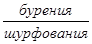 после чего идет _____________________________________________________________ ___________________________________________________________________________ 11. Данные о заглушении ключей ___________________________________________ Работы выполнены в соответствии с проектом, стандартами, строительными нормами и отвечают требованиям их приемки. Предъявленные к приемке работы по устройству основания трубы приняты с оценкой качества __________________. На основании изложенного разрешается производить работы по установке металлических конструкций трубы. Приложения к акту: 1. Проектный и исполнительный план котлована, подушки, экранов с привязкой к осям сооружения. 2. Продольный и поперечный разрезы по котловану и песчано-гравийному основанию с нанесенными проектными и фактическими отметками Представитель строительно-монтажной организации _______________ (подпись) Представитель технического надзора заказчика _______________ (подпись) |
Примечания. 1. При заложении котлована под основание трубы на скале контрольное бурение производится только по специальному требованию приемочной комиссии.
2. Испытание грунтов производится при наличии специальных указаний в проекте или по требованию комиссии.
Особое внимание уделяется проверке качества уплотнения грунта у трубы; проверка осуществляется контрольным штыкованием по гофрам с обеих сторон трубы в трех сечениях (под осью пути и на расстоянии 3-4 м от нее). С этой целью у стенки трубы удаляется половина толщины уложенного слоя и осуществляется контрольная штыковка на поверхности и на вскрытом уровне.
В случае обнаружения рыхлого грунта в гофрах должна производиться дополнительная штыковка по всей длине трубы.
|
МИНИСТЕРСТВО ТРАНСПОРТНОГО |
Приложение 3 |
|
________________________________________ (главное управление, трест) Строительная организация _________________ ________________________________________ Строительство ___________________________ ________________________________________ (наименование и месторасположение, км, пк) |
Форма № _____ |
АКТ
промежуточной приемки смонтированной металлической трубы
и устройства оголовков
|
Гор. ______________ “____”_____________19 г. Комиссия в составе: представителя строительно-монтажной организации _________ ___________________________________________________________________________ (фамилия, и., о., должность) представителя технического надзора заказчика __________________________________ ___________________________________________________________________________ (фамилия, и., о., должность) произвела осмотр выполненных работ и составила настоящий акт о нижеследующем: ___________________________________________________________________________ ___________________________________________________________________________ Комиссии предъявлены: 1. Чертежи № _______________________________________________, разработанные ___________________________________________________________________________ (наименование проектной организации) с нанесенными на них всеми отклонениями от проекта, допущенными в процессе строительства и согласованными проектной организацией. 2. Журнал работ № __________ 3. Журнал № _________ авторского надзора. 4. Журнал _______________________________________________________________ (указать номер и наименование, например ___________________________________________________________________________ журнал № 2 монтажных работ) 5. Акты приемки и проверки предшествующих работ ___________________________ ___________________________________________________________________________ (указать номер и наименование) 6. Паспорт № _________ на сборные бетонные, железобетонные изделия (партия изделий). 7. Паспорт № __________ на металлические конструкции, примененные при монтаже. 8. Данные нивелировки продольного профиля трубы от репера № __________, отметка которого ________ (в отметках, принятых в акте), и результаты замеров горизонтальных и вертикальных диаметров трубы ____________________________ ___________________________________________________________________________ 9 Документы лабораторных анализов и испытаний при монтаже (контрольных бетонных образцов, сварных соединений, раствора) ______________________________ ___________________________________________________________________________ Комиссия, ознакомившись с предъявленными документами и освидетельствовав ___________________________________________________________________________ ___________________________________________________________________________ (наименование смонтированной конструкции) установила 1. Отдельные элементы конструкции и вся конструкция в целом установлены правильно в пределах отклонений от проекта, допускаемых действующими СНиП (схематический чертеж положения конструкции в плане и по отметкам приведен в приложение №_____________ к акту). 2. Монтажные соединения в узлах и стыках № ___________ выполнены в соответствии с проектом, требованиями действующих СНиП и приняты с оформлением результатов приемки следующими документами ________________________________. 3. Средняя прочность бетона __________ серий образцов в возрасте ________ дней, изготовленных из рабочей бетонной смеси железобетонной (бетонной) конструкции, составляет _______ кгс/см2 при проектной прочности бетона _________ кгс/см2. 4. Результаты освидетельствования смонтированной конструкции ________________ ___________________________________________________________________________ (указать качество элементов по данным внешнего осмотра наличие дефектов, ___________________________________________________________________________ плотность примыкания элементов конструкций к опорным поверхностям, ___________________________________________________________________________ друг к другу, наличие протекторов электрозащиты и т.п. ) Работы выполнены в соответствии с проектом, стандартами, строительными нормами и правилами и отвечают требованиям их приемки. Предъявленные к приемке работы по монтажу трубы и устройству оголовков приняты с оценкой качества __________________________. На основании изложенного разрешается производить работы по устройству дополнительного защитного покрытия трубы. Приложения: 1. Схематический чертеж положения смонтированной конструкции в плане и по отметкам с привязкой к осям сооружения по данным инструментальной съемки от ” ___ ” ______________________ 19 г. 2. Сводная ведомость № __________ результатов испытания контрольных бетонных образцов. Представитель строительно-монтажной организации _________________ (подпись) Представитель технического надзора заказчика _________________ (подпись) |
Примечания. 1. Акт по настоящей форме составляется при приемке смонтированных стальных (тела трубы), железобетонных и бетонных конструкций (противофильтрационных экранов, оголовков и др.).
2. Особое внимание уделяется проверке правильности нахлеста листов в продольных стыках; по концам элементов, находящимся внутри трубы, во втором от кромки листа ряду продольного стыка не должно быть болтов на наружных гребнях волн.
3. Перечень предъявляемых документов уточняется комиссией в зависимости от характера принимаемой конструкции.
4. Приемка стальных конструкций производится до нанесения на них дополнительных защитных покрытий, кроме случаев поступления элементов с нанесенным на заводе покрытием.
5. Для труб под двухпутную электрифицированную постоянным током железную дорогу прилагаются паспорта протекторов электрозащиты.
|
МИНИСТЕРСТВО ТРАНСПОРТНОГО _____________________________________ (главное управление, трест) Строительная организация _____________ _____________________________________ Строительство _______________________ _____________________________________ (наименование и месторасположение, км, пк) |
Приложение 4Форма № _____ |
АКТ
приемки дополнительного антикоррозионного покрытия
металлической трубы
|
Гор. ______________ “____”_____________19 г. Комиссия в составе: представителя строительно-монтажной организации _________ ___________________________________________________________________________ (фамилия, и., о., должность) представителя технического надзора заказчика __________________________________ ___________________________________________________________________________ (фамилия, и., о., должность) произвела осмотр в натуре противокоррозионного дополнительного покрытия и составила настоящий акт о нижеследующем: ____________________________________ ___________________________________________________________________________ ___________________________________________________________________________ Комиссии предъявлены: 1. Чертежи № _______________, разработанные _______________________________ ___________________________________________________________________________ (наименование проектной организации) с нанесенными на них всеми отклонениями, допущенными в процессе строительства и согласованными с проектной организацией. 2. Журнал работ № ______________ 3. Журнал авторского надзора № _______________ 4. Данные о результатах лабораторных испытаний примененных материалов. 5. Акты № ___________________ приемки и проверки предшествующих работ. Комиссия, ознакомившись с предъявленными документами и проверив выполненные работы в натуре, установила: 1. ______________________________________________________________________ __________________________________________________________________________ (приводится краткое описание выполненных работ, отклонений от рабочих чертежей ___________________________________________________________________________ с указанием номеров документов о согласовании этих отклонений с проектной ___________________________________________________________________________ организацией, дефектов, обнаруженных при освидетельствовании, и т.п.) 2. Работы по устройству ___________________________________________________ ___________________________________________________________________________ (наименование законченного конструктивного элемента ___________________________________________________________________________ дополнительного защитного покрытия) выполнялись
при температурах наружного воздуха от _______°С до ______°С при следующих
атмосферных условиях под защитой 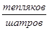 ___________________________________________________________________________ Работы выполнены в соответствии с проектом, стандартами, строительными нормами и правилами и отвечают требованиям их приемки. Предъявленные к приемке работы по устройству дополнительного противокоррозионного покрытия трубы приняты с оценкой качества ________________. На основании изложенного разрешается производство последующих работ по засыпке трубы. Приложения. 1. Акты приемки предшествующих работ по устройству защитного покрытия (огрунтовки) по настоящей форме _____________________________________________ (номер и наименование актов) 2. Данные о результатах лабораторных испытаний примененных материалов. Представитель строительно-монтажной организации ____________________ (подпись) Представитель технического надзора заказчика ____________________ (подпись) |
Примечание. Особое внимание уделяется состоянию защитного покрытия в продольных и поперечных стыках и в лотковой части трубы.
|
МИНИСТЕРСТВО ТРАНСПОРТНОГО ________________________________________ (главное управление, трест) Строительная организация ________________ _______________________________________ Строительство __________________________ _______________________________________ (наименование и месторасположение, км, пк) |
Приложение 5Форма № _____ |
АКТ
Освидетельствования засыпки трубы (на высоту 0,5 м над трубой)
|
Гор. ______________ “____”_____________19 г. Комиссия в составе: представителя строительно-монтажной организации __________ ___________________________________________________________________________ (фамилия, и., о., должность) представителя технического надзора заказчика __________________________________ ___________________________________________________________________________ (фамилия, и., о., должность) произвела осмотр в натуре засыпки трубы (на высоту 0,5 м над трубой) и составила настоящий акт о нижеследующем: _____________________________________________ ___________________________________________________________________________ ___________________________________________________________________________ Комиссии предъявлены: 1. Чертежи № _______________, разработанные _______________________________ ___________________________________________________________________________ (наименование проектной организации) с нанесенными на них отклонениями, согласованными ___________________________ “_____” _____________ 19 г. № __________ 2. Журнал работ № ______________ 3. Журнал авторского надзора № _______________ 4. Данные о грунтах засыпки _______________________________________________ 5. Результаты нивелировки _________________________________________________ Комиссия, ознакомившись с предъявленными документами и проверив выполненные работы, установила: 1. Отметка естественной поверхности грунта основания насыпи по оси трубы _____ ___________________________________________________________________________ 2. Засыпка трубы произведена до отметки ____________________________________ при проектной отметке ______________________________________________________ 3. Поперечный разрез насыпи по оси трубы (см. приложение 1 к настоящему акту). 4. Нивелировка произведена от репера № _________, отметка которого __________ (в отметках, принятых в проекте). 5. Засыпка выполнена _____________________________________________________ (способ и порядок отсыпки) 6. Уплотнение грунта засыпки производилось ________________________________ ___________________________________________________________________________ (тип уплотняющей машины) слоями толщиной _________ см, достигнутый коэффициент уплотнения (в местах согласно п. 5.80 ВСН 176-78) _________________________________________________ объемная масса _________________ т/м3. 7. Род грунта, примененного для засыпки ____________________________________ 8. Интенсивность отсыпки _________________________________________________ (дата начала и окончания отсыпки) 9. Водоотводные сооружения (кюветы, нагорные канавы) выполнены ____________ (по проекту или с отступлениями). Работы выполнены в соответствии с проектом, стандартами, строительными нормами и правилами и отвечают требованиям их приемки. Предъявленные к приемке работы по засыпке трубы принять с оценкой ___________________. Приложения. 1. Поперечный разрез насыпи по оси трубы (с отметками лотка трубы). 2. Схема засыпки, включая поперечный разрез призмы засыпки трубы. 3. Результаты контрольных проверок плотности, полученных в процессе засыпки трубы. Представитель строительно-монтажной организации __________________ (подпись) Представитель технического надзора заказчика __________________ (подпись) |
Примечания. 1. Особое внимание уделяется контролю качества засыпки и уплотнения грунта непосредственно у стенок трубы.
2. Дополнительная контрольная проверка качества уплотнения засыпки производится по требованию комиссии. Для этого закладываются шурфы в непосредственной близости к стенке трубы до уровня ее горизонтального диаметра и отбираются пробы обычными методами (см. приложение 17 ВСН 176-78 по проектированию и строительству металлических гофрированных водопропускных труб) на 4-5 горизонтах.
|
МИНИСТЕРСТВО ТРАНСПОРТНОГО _____________________________________ (главное управление, трест) Строительная организация _____________ _____________________________________ Строительство ________________________ _____________________________________ (наименование и месторасположение, км, пк) |
Приложение 6Форма № _____ |
АКТ
промежуточной приемки лотка в металлической гофрированной трубе
|
Гор. ______________ “____”_____________19 г. Комиссия в составе: представителя строительно-монтажной организации __________ ___________________________________________________________________________ (фамилия, и., о., должность) представителя технического надзора заказчика __________________________________ ___________________________________________________________________________ (фамилия, и., о., должность) произвела осмотр выполненных работ по устройству защитного лотка и составила настоящий акт о нижеследующем: _____________________________________________ ___________________________________________________________________________ ___________________________________________________________________________ Комиссии предъявлены: 1. Чертежи № _______________, разработанные _______________________________ ___________________________________________________________________________ (наименование проектной организации) с нанесенными на них всеми отклонениями, допущенными в процессе строительства и согласованными с проектной организацией. 2. Журнал работ № ______________ 3. Журнал авторского надзора № _______________ 4. Данные о результатах лабораторных испытаний примененных материалов. 5. Акты № _______ приемок предшествующих paбот. Комиссия, ознакомившись с предъявленными документами и проверив выполнение работы в натуре, установила: _________________________________________________ ___________________________________________________________________________ (производится краткое описание выполненных работ, отклонении, дефектов, ___________________________________________________________________________ обнаруженных при освидетельствовании, и т.п.) Работы выполнены в соответствии с проектом, стандартами, строительными нормами и правилами и отвечают требованиям их приемки. Предъявленные к приемке работы по устройству лотка принять с оценкой качества ____________________. Приложения. 1. Акты приемки предшествующих работ. 2. Данные о результатах лабораторных испытаний примененных материалов. Представитель строительно-монтажной организации _______________ (подпись) Представитель технического надзора заказчика _______________ (подпись) |
Примечание. Особое внимание уделяется проверке качества. лотка в пределах продольных и поперечных стыков и боковых торцов лотка.
|
МИНИСТЕРСТВО ТРАНСПОРТНОГО _____________________________________ (главное управление, трест) Строительная организация _____________ _____________________________________ Строительство ________________________ _____________________________________ (наименование и месторасположение, км, пк) |
Приложение 7Форма № _____ |
АКТ
|
|
Номера звеньев, считая от входного оголовка |
Характеристика состояния элемента (величина измеренного диаметра по вертикали и по горизонтали и т.д. ) |
Примечание (марка элемента, дата изготовления и т.д.) |
2. Данные нивелировки лотка трубы (с приложением чертежа профилей лотка)
|
Номера звеньев, считая от входного оголовка |
Отметка лотка для каждого звена у края, ближайшего к входному оголовку |
Примечание |
Примечание. На чертеже показываются профиль по проекту с учетом заданного строительного подъема, фактические профили до и после засыпки.
3. Входное и выходное русла выполнены и укреплены по проекту (чертежи № _______ ) со следующими, отступлениями __________________________.
4. Откосы насыпи у входного и выходного оголовков укреплены _________ по проекту _______________ (чертежи № _______________ ) со следующими отступлениями ______________________________________.
5. У входного и выходного оголовков устроены лестницы.
Работы выполнены в соответствии с проектом, стандартами, строительными нормами и правилами и отвечают требованиям их приемки. Предъявленные к приемке работы по сооружению трубы принять с оценкой качества _________________.
Приложения.
1. Чертежи с профилями лотка трубы.
2. Акты на скрытые работы и ответственные конструкции.
Представитель строительно-монтажной
организации ________________
(подпись)
Представитель технического
надзора заказчика ________________
(подпись)
Представитель авторского надзора
проектной организации
(при его осуществлении) _______________
(подпись)
Примечание. Особое внимание уделяется контролю качества выполнения укрепительных работ на входе и выходе; состоянию продольного профиля лотка трубы; состоянию защитных покрытий (основного и дополнительного); величине деформаций поперечного сечения трубы.
Приложение 8
(к п. 2.1)
МЕХАНИЧЕСКИЕ СВОЙСТВА И ХИМИЧЕСКИЙ СОСТАВ СТАЛЕЙ ДЛЯ ГОФРИРОВАННЫХ ВОДОПРОПУСКНЫХ ТРУБ
Таблица 1
|
Стали марок |
||
|
15сп |
09Г2Д |
|
|
Не менее |
||
|
Предел текучести σт, кгс/мм2 |
24 |
31 |
|
Временное сопротивление σв, кгс/мм2 |
40 |
45 |
|
Относительное удлинение δу, % |
23 |
22 |
|
Изгиб на 180° (а - толщина образца, d - диаметр оправки) |
d = 2a |
d = 2a |
Таблица 2
|
Марка стали |
Химический состав, % |
|||||||
|
углерод |
кремний |
марганец |
медь |
хром |
Никель |
сера |
фосфор |
|
|
15сп |
0,12-0,20 |
0,12-0,25 |
0,40-0,65 |
0,20-0,30 |
Не более 0,25 |
Не более 0,25 |
≤ 0,035 |
≤ 0,035 |
|
09Г2Д |
≤ 0,12 |
0,17-0,37 |
1,4-1,8 |
0,20-0,35 |
≤ 0,30 |
≤ 0,30 |
≤ 0,040 |
≤ 0,035 |
На рисунке приведен профиль гофрированного листа.
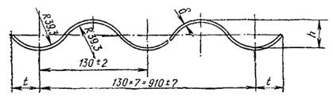
Профиль гофрированного листа:
h = 32,5 ± 3; δ = 1,5; 2 и 2,5; t = 32,5 ± 7,5 (размеры в миллиметрах)
Приложение 9
(к пп. 2.9-2.12; 5.54;
5.57; 5.59; 5.64; 5.65).
СОСТАВ, СВОЙСТВА,
СПОСОБЫ ПРИГОТОВЛЕНИЯ
И МЕТОДЫ ИСПЫТАНИЯ БИТУМНЫХ МАСТИК
1. Битумно-резиновые мастики МБР-65 и МБР-90
Составы и свойства битумно-резиновых мастик МБР-65 и МБР-90, предусмотренные ГОСТ 15836-70, приведены соответственно в табл. 1 и 2
Таблица 1
|
Содержание компонентов в мастике, % по массе |
||
|
МБР-65 |
МБР-90 |
|
|
Битум нефтяной строительный БH-IV по ГОСТ 6617-76 или нефтяной |
||
|
для изоляции нефтегазопроводов БНИ-IV по ГОСТ 9812-74* |
88 |
93 |
|
Наполнитель - резиновая крошка из амортизированных автопокрышек |
||
|
по ТУ 51-408-83-68 Миннефтехимпрома СССР |
5 |
7 |
|
Пластификатор - зеленое масло по ГОСТ 2985-64** |
7 |
- |
* Допускается применение сплавленных битумов нефтяных строительных марок БH-III и БН-V (соответственно 40 и 60% по массе).
** Допускается применение осевого масла по ГОСТ 610-72 или индустриального масла марки И-50А по ГОСТ 20799-75.
Таблица 2
|
Норма для мастик |
Методы испытаний |
||
|
МБР-65 |
МБР-90 |
||
|
Температура размягчения по КиШ,°С, не менее |
65 |
90 |
|
|
Глубина проникания иглы при 25°С, 1/10 мм, не менее |
40 |
20 |
ГОСТ 11501-73 |
|
Растяжимость при 25°С, см, не менее |
4 |
3 |
ГОСТ 11505-65* |
|
Водонасыщаемость мастики за 24 ч, % по массе, не более |
0,2 |
0,2 |
|
Битумно-резиновые мастики на месте производства работ рекомендуется изготовлять в открытых битумно-плавильных котлах, например, типа УБК с механическим перемешиванием компонентов.
Мастику следует приготовлять с соблюдением следующего порядка.
Битум дробят на куски массой до 5 кг, которые загружают в варочный котел, расплавляют и обезвоживают. В расплавленный битум добавляют подогретый до 110-120°С наполнитель-резиновую крошку. Затем при непрерывном перемешивании составляющих в течение 2-3 ч температуру доводят до 180°С. Интенсивный нагрев мастики в котле выше 200°С не допускается во избежание коксования и воспламенения массы. В остывшую до температуры 130-140°С битумно-резиновую мастику вводят пластификатор (зеленое масло), при этом однородность ее достигается тщательным перемешиванием.
При отсутствии битума марки БН-IV битумную массу с идентичными свойствами можно приготовлять путем сплавления 60% битума марки BH-V и 40% битума марки БН-III. В этом случае в котел сначала загружают битум марки БН-III, а затем после прекращения вспенивания массы - битум марки БН-V.
2. Битумно-резиновая мастика МБР-65, получаемая из мастики МБР-90
Мастику МБР-65 допускается изготавливать компаундированием мастики МБР-90 добавками индустриального масла марки 50 (машинного СУ) в количестве 15%. Масло должно быть добавлено в расплавленную и доведенную до температуры 130-150°С массу. При добавлении масла массу необходимо непрерывно перемешивать.
Свойства мастики МБР-65 указанной модификации должны отвечать (нормам, приведенным в табл. 3.
Таблица 3
|
Норма |
Методы испытаний |
|
|
Температура размягчения по КиШ,°С, не ниже |
65 |
|
|
Глубина проникания иглы при 25°С, 1/10 мм, не менее |
100 |
ГОСТ 11501-73 |
|
Растяжимость при 25°С, см, не менее |
5 |
ГОСТ 11505-65* |
|
Водонасыщаемость мастики за 24 ч, % по массе, не более |
0,2 |
|
|
Гибкость при t = +18 ±2°С (при изгибании вокруг стержня диаметром 15 мм) |
Отсутствие трещин |
См. п. 7 данного приложения |
|
Теплостойкость,°С, не менее |
50 |
То же, п. 8 |
|
Хладостойкость,°С, не выше |
-42 |
То же, п. 9 |
3. Битумно-минеральные мастики (битуминоли)
Составы и физико-механические свойства битуминолей марок Н-1 и Н-2 приведены соответственно в табл. 4 и 5.
Таблица 4
|
Состав, в частях по массе |
|||
|
битум1 |
наполнитель1 |
асбест1 |
|
|
Н-1 |
100 |
100 |
5 |
|
Н-2 |
100 |
80 |
5 |
1 Применяются следующие материалы: битум нефтяной строительный марки БH-V по ГОСТ 6617-76; доломитизированный молотый известняк (на сите с 900 отверстиями в 1 см2 должен оставлять остаток не более 2%); асбест 6-го и 7-го сортов по ГОСТ 12871-67.
Таблица 5
|
Марки битуминолей |
||
|
Н-1 |
Н-2 |
|
|
Растяжимость при 50°С, см, не менее |
3 |
3,5 |
|
Глубина проникания иглы при 25°С (количество десятых долей миллиметра), не менее |
10 |
10 |
|
Плотность, г/см3 |
1,5 |
1,4 |
|
Температура размягчения,°С, не менее |
113 |
108 |
Битуминоли марки Н-1 или Н-2 рекомендуется изготовлять в битумно-плавильных котлах типа УБК.
Раздробленный на куски массой до 5 кг битум марки БН-V загружают в котел, плавят и обезвоживают, постепенно нагревая до рабочей температуры 180-200°С.
Порошок измельченных каменных кислотостойких пород дозируют и смешивают с порошком хризотилового асбеста, затем получившийся комбинированный наполнитель подогревают до 110°С.
В нагретый до температуры 180-200°С битум добавляют дозированное количество нагретого комбинированного наполнителя. При добавлении его в битум массу необходимо перемешивать мешалкой с частотой вращения не менее 40 об/мин.
Состав битумной грунтовки приведен в табл. 6
Таблица 6
|
Количество, % |
|
|
Битум нефтяной строительный марки БН-IV по ГОСТ 6617-76 или битум нефтяной для изоляции нефтегазопроводов марки БНИ-IV по ГОСТ 9812-74 |
25-35 |
|
Масло индустриальное селиктивной очистки марки ИС-50 |
5 |
|
Бензин для промышленно-технических целей по ГОСТ 8505-57 или автомобильный бензин неэтилированный по ГОСТ 2084-67* (летом) или авиационный бензин по ГОСТ 1012-72 (зимой) |
60-70 |
Битумная грунтовка при температуре 20°С должна иметь вязкость 10-15 с при истечении 50 см3 раствора из конусной воронки НИЛК со сточным капилляром диаметром 5 мм.
Грунтовку приготовляют путем пластификации битума тугоплавких арок и разжижения в соответствующем растворителе - бензине, выполняя операции в следующем порядке:
приготовление в емкости объемом 30-50 л дозированного количества расплавленного, обезвоженного и охлажденного до температуры 110-120°С битума;
добавление в битум индустриального масла марки И-50А;
вливание смеси тонкой струей в емкость с бензином.
При приготовлении грунтовки составляющие следует непрерывно перемешивать вручную или лопастной мешалкой, вращающейся с помощью легкой пневмодрели типа ИП-1007 (частота вращения 450 об/мин).
5. Ненаполненные битумные мастики
Состав и свойства ненаполненных мастик пластбитулена, битудиена и пластбитудиена приведены соответственно в табл. 7 и 8.
Таблица 7
|
Содержание компонентов, % по массе |
|||
|
в пластбитулене |
в битудиене |
в пластбтудиене |
|
|
Битум БН-IV или БН-V по ГОСТ 6617-76 либо битум БНИ-IV по ГОСТ 9812-74 |
- |
80 |
- |
|
Пластбит II высшей категории по ТУ 38-101580-75 Миннефтехимпрома СССР |
92 |
- |
80 |
|
Зеленое масло по ГОСТ 2985-64 |
5* |
- |
- |
|
Полидиен по ТУ 38-103280-75 Миннефтехимпрома СССР |
- |
20 |
20 |
|
Полиэтилен воскообразный по ТУ 6-05-10-75 Минхимпрома СССР |
3 |
- |
- |
* Вместо зеленого масла в состав пластбитудиена допускается вводить полидиен.
Таблица 8
|
Норма |
Методы испытаний |
|||
|
пластбитулен |
битудиен |
пластбитудиен |
||
|
Температура размягчения по КиШ,°С, не менее |
80 |
70 |
63 |
|
|
Глубина проникания иглы (количество десятых долей миллиметра), не менее: |
||||
|
при 25°С |
40 |
30 |
110 |
ГОСТ 11501-73 |
|
при 0°С |
10 |
10 |
25 |
ГОСТ 11501-73 |
|
Растяжимость при 25°С, см |
2,5 |
3,5 |
5,8 |
ГОСТ 11505-65* |
|
Точка хрупкости по Фраасу,°С, не выше |
-20 |
-23 |
-40 |
ГОСТ 11507-65 |
|
Хладостойкость,°С, не выше |
-17 |
-17 |
-30 |
Согласно п. 9 данного приложения |
6. Расходы материалов на устройство битумных защитных покрытий различных типов (табл. 9)
Таблица 9
|
Марка |
Состав покрытия (слой) |
Примерный расход материалов на 1м2 покрытия, кг |
|
|
Наполненная |
Б-1 |
Битумная грунтовка |
0,3-0,4 |
|
Мастика МБР-65 |
2,5-3,0 |
||
|
Битумная грунтовка |
0,3-0,4 |
||
|
Мастика МБР-6 |
2,5-3,0 |
||
|
Б-2 |
Битуминоль Н-1 или мастика МБР-90 |
2,0-2,5 |
|
|
Битумная грунтовка |
0,3-0,4 |
||
|
Б-3 |
Битуминоль Н-2 |
2,5-3,0 |
|
|
Битуминоль Н-1 или мастика МБР-90 |
2,0-2,5 |
||
|
Ненаполненная |
ПБТ |
Пластбитулен |
2,5-3,0 |
|
БТД |
Битудиен |
2,0-2,5 |
|
|
ПБД |
Пластбитудиен |
2,5-3,0 |
Расплавленную мастику с температурой 140-160°С наносят слоем толщиной около 2 мм на полоски пергамина или гидроизола размером 10×5 см. Приготовленные пять образцов, остывшие до температуры 18±2°С, через 2 ч помещают в воду с температурой 18±2°С. Образцы, выдержанные в воде 15 мин, вынимают и равномерно в течение 2 с изгибают по полуокружности стержня диаметром 15 мм (см. табл. 3).
Мастика считается выдержавшей испытание, если при изгибе на стержне указанного диаметра не показала признаков растрескивания.
За результат испытаний принимают данные наблюдений, повторяемые не менее чем на трех образцах из пяти.
8. Испытание на теплостойкость
Расплавленную мастику с температурой 140-160°С наносят слоем толщиной около 2 мм на полоски размером 5×10 см из пергамина или гидроизола. Приготовленные три образца, остывшие до температуры 18±2°С, прикрепляют вертикально к деревянным подставкам, накалывая их на металлические шпильки, для чего образцы по оси на расстоянии 10 мм от верхней кромки прокалывают шпилькой. Через 2 ч образцы помещают в термостат, предварительно нагретый до температуры 50°С (см. табл. 3). Образец выдерживают в термостате при соответствующей температуре в течение 5 ч.
Вынутые из термостата образцы считаются выдержавшими испытание, если не менее чем на двух из них отсутствуют наплывы и другие признаки сползания мастики.
9. Испытание на хладостойкость
Расплавленные мастики с температурой 140-160°С наносят слоем толщиной около 2 мм на полоски пергамина или гидроизола размером 5×15 см. Через 2 ч приготовленные образцы помещают на 30 мин в холодильную камеру или охлаждающую смесь (спирт с твердой углекислотой). По истечении этого времени образец, не вынося из холодильной камеры (или не вынимая из охлаждающей смеси), равномерно в течение 2 с изгибают по дуге шаблона радиусом 250 мм. Температуру, при которой на мастике появляется первая трещина, фиксируют.
Мастика считается выдержавшей испытание, если при требуемых температурах (см. приложение 9, табл. 3 и 8) на поверхности образцов не наблюдается признаков появления трещин.
За результат испытаний принимаются данные наблюдений, повторяемые не менее чем на трех образцах из пяти.
Приложение 10
(к пп. 2.13; 5.30; 5.49; 6.15)
РУКОВОДСТВО ПО
ДОПОЛНИТЕЛЬНОЙ ЗАЩИТЕ
МЕТАЛЛИЧЕСКИХ ГОФРИРОВАННЫХ ТРУБ
ПОЛИМЕРНЫМИ ЛАКОКРАСОЧНЫМИ МАТЕРИАЛАМИ
1. Составы защитных покрытий
1.1. Для дополнительного защитного покрытия труб применяются эпоксидно-каучуковые грунт ЭКГ и краска ЭКК-100*, эпоксидно-каменноугольная эмаль ЭП-5116 (ТУ 6-10-1369-73 Минхимпрома СССР) и эпоксидно-полиамидная эмаль ЭП-1155 (ТУ 6-10-1504-75 Минхимпрома СССР) и эпоксидно-каменноугольная мастика ЭКМ (ТУ 1637-84 Минтрансстроя.
(Измененная редакция, Дополнение № 1).
1.2. Составы грунта ЭКГ, краски ЭКК-100 и мастики ЭКМ приведены в табл. 1.
Таблица 1
|
ГОСТ или ТУ |
Состав, в.ч. |
|||
|
ЭКГ |
ЭКК-100 |
ЭКМ |
||
|
Смола эпоксидная диановая ЭД-16 или ЭД-20 |
ГОСТ 10587-64 |
100 |
100 |
100 |
|
Смола каменноугольная |
ОСТ 14-62-80 |
- |
- |
100 |
|
Каучук низкомолекулярный СКН-10-1А |
ТУ 38-10316-76 |
10 |
100 |
- |
|
СКН-18-1А или СКН-26-1А |
- |
- |
30 |
|
|
Полиэтиленполиамин |
ТУ 6-02-594-80 |
10 |
10 |
12 |
|
Сурик железный или пудра алюминиевая |
ГОСТ 5494-71 |
- |
12,5 |
- |
|
Растворитель: ксилол или смесь растворителей (ксилол:толуол = 1:1) |
50 |
30 |
25 |
|
(Новая редакция, Дополнение № 1).
1.3. Приготовление грунта ЭКГ и краски ЭКК-100 состоит в следующем. Эпоксидную смолу ЭД-16 или ЭД-20 и жидкий каучук СКП-10-1А смешивают в указанных в п. 1.2 соотношениях, прогревают на водяной бане при температуре 90-100°С в течение 4 ч, тщательно и периодически перемешивая. После этого смесь охлаждают до нормальной температуры и к ней добавляют растворитель в количестве, соответствующем рецептуре готовой композиции.
Полученную таким образом композицию можно хранить в герметически закрытой таре при температуре, указанной в п. 1.8 настоящего приложения, не более четырех месяцев.
1.3а. Мастика ЭКМ должна изготавливаться в заводских условиях и поставляться потребителю в виде двух компонентов:
эпоксидная смола с введенным в нее синтетическим каучуком;
каменноугольная смола с введенным в нее полиэтиленполиамином.
Перед употреблением оба компонента смешивают в соотношении 1:1. Жизнеспособность мастики ЭКМ после приготовления при температуре 18 - 22 °С сохраняется до 4 ч. Перед применением мастики ЭКМ в нее вводится растворитель для достижения необходимых технологических свойств в количестве до 25 %.
(Введен дополнительно, Дополнение № 1).
1.4. Отвердитель (полиэтиленполиамин) должен вводиться непосредственно перед использованием грунта ЭКГ или краски ЭКК-100. Пигмент (железный сурик или алюминиевая пудра) также должен быть введен в состав краски ЭКК-100 перед ее использованием.
Рабочий состав необходимо использовать в течение 30-40 мин.
1.5. Составы покрытий на основе эмалей ЭП-5116 и ЭП-1155 приведены в табл. 2.
Таблица 2
|
Компоненты |
Соотношение (по массе) |
|
|
ЭП-5116 |
Компонент I - эпоксидный Компонент II - каменноугольный |
I : II = 1:2 |
|
ЭП-1155 |
Компонент I - эпоксидный Компонент II - отвердитель |
I : II = 8:3 |
Перед употреблением компоненты эмалей тщательно перемешивают. допускается для снижения вязкости вводить в состав растворитель P-40 (TУ VXII 86-59) в количестве до 10% массы эмали.
1.6. Компоненты эмалей должны смешиваться непосредственно перед использованием. Жизнеспособность эмалей после приготовления не более 3 ч при температуре 18-22°С.
1.7. Компоненты эмалей ЭП-5116, ЭП-1155, грунта ЭКГ, краски ЭКК-100 и мастики ЭКМ поступают к заказчику в металлических флягах, которые должны быть плотно закупорены во избежание попадания влаги.
(Измененная редакция, Дополнение № 1).
1.8. Материалы должны храниться на складе при температуре не ниже 5°С и не выше 20°С.
1.9. Перед использованием материалов фляги с наружной стороны должны быть протерты от пыли и грязи. Попадание на материалы воды, грязи и пыли приводит к их порче.
2. Технология защиты оцинкованных элементов труб
2.1. Работы по устройству защиты элементов труб должны выполняться в специальном отапливаемом окрасочном цехе при температуре не ниже 15°С и относительной влажности воздуха не выше 80 %.
2.2. Технологический процесс защиты включает следующие операции:
подготовку элементов труб к окраске; окраску элементов труб и отверждение покрытия; упаковку окрашенных элементов в пакеты и их отгрузку на склад готовой продукции.
2.3. Подготовку поверхности оцинкованных элементов под окраску следует производить в специальных камерах.
2.4. Подготовка поверхности оцинкованных элементов под окрашивание должна состоять в удалении грязи и жира с нее перед приданием ей шероховатости. Удаление загрязнений должно производиться моющими составами или растворителем (уайт-спиритом) с помощью щеток или протирочного материала в соответствии с ГОСТ 9402-80.
Затем поверхности придается шероховатость, равная 40 - 50 мкм.
Не допускается попадание на подготовленную под окрашивание поверхность воды, масла, коррозионно-активных жидкостей и паров.
(Новая редакция, Дополнение № 1, 2).
2.5. (Исключен, Дополнение № 1, 2).
2.6. При окрашивании элементов труб эмали ЭП-5116, ЭП-1155 и мастику ЭКМ следует наносить в два слоя. Краску ЭКК-100 следует наносить по грунту ЭКГ.
Толщина покрытий приведена в п. 1.3 настоящих Дополнений. Расход материалов покрытий на 1 м2 на 1 слой, кг:
Э-1 (эмали ЭП-1155 или ЭП-5116)........................................... 0,30 - 0,35
Э-2 (грунт ЭКГ)........................................................................... 0,08 - 0,10
(краска ЭКК-100)........................................................................ 0,20 - 0,22
Э-3 (мастика ЭКМ)...................................................................... 0,35 - 0,45
(Новая редакция, Дополнение № 1).
2.7. Процесс окраски элементов труб включает:
нанесение первого слоя покрытия на внешнюю и внутреннюю поверхности элементов;
сушку первого слоя при температуре 90-100°С в течение 15-20 мин;
нанесение второго слоя покрытия на внешнюю и внутреннюю поверхности элементов;
сушку покрытия при температуре 90-100°С в течение 60-90 мин.
2.8. Работы по нанесению покрытия и его сушке должны выполняться в цехе, оснащенном специальным оборудованием.
2.9. Нанесение рекомендуемых лакокрасочных материалов на поверхность элементов следует производить методом пневматического распыления, при этом можно использовать пистолет-распылитель марки Р-68.
Грунт ЭКГ и краску ЭКК-100 следует наносить краскораспылителями СО-71, СО-24А или установкой для высоковязких смесей УНВС-2К.
Нанесение эмалей ЭП-5116 и ЭП-1155 должно осуществляться с помощью специальной установки (см. рисунок) конструкции научно-производственного объединения «Лакокраспокрытие». Компоненты эмалей ЭП-5116 и ЭП-1155 для снижения вязкости могут быть предварительно подогреты до температуры 60-80°С.
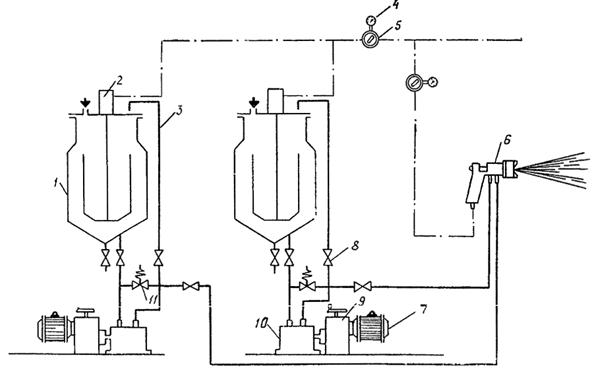
Принципиальная схема установки:
1 - питательный бак; 2 - пневмодвигатель; 3 - трубка; 4 - манометр; 5 - редуктор; 6 - распылитель 7 - электродвигатель; 8 - вентиль; 9 - редуктор; 10 - насос; 11 - клапан
Нанесение мастики ЭКМ осуществляется с помощью окрасочного агрегата безвоздушного распыления типа 7000 Н или с помощью установок УНВС-2К, УНДП-4 или их последующих модификаций.
(Измененная редакция, Дополнение № 1).
Техническая характеристика установки
Производительность, кг/мин 0,5-1,5
Рабочая температура,°С 60-80
Емкость бачка, л 50
Диаметр материального сопла, мм 4,5-6
Давление воздуха, кгс/см2, не менее 4
Расход воздуха на распыление, м3/ч 15-20
Соотношение компонентов
(изменение соотношения плавное) от 1:1 до 1:5
Напряжение, В 220/380
Потребляемая мощность, кВт 6
Расстояние до окрашиваемой поверхности, мм 250-300
Габариты, мм:
длина 1250
ширина 1000
высота 1500
Масса (без материала), кг 500
2.10. Сборку окрашенных элементов в пакеты и их складирование следует производить после охлаждения элементов в специальной камере.
Отгружать элементы необходимо не ранее чем через 3-5 суток после нанесения покрытия.
2.11. Во избежание повреждения покрытия на элементах труб при их сборке в пакеты и транспортировке следует соблюдать возможные меры предосторожности в соответствии с пп. 5.7-5.12 настоящей Инструкции.
3. Контроль качества эмали, подготовки поверхности элементов труб и защитного покрытия
3.1. При выполнении работ по защите элементов труб необходимо осуществлять контроль качества материалов, подготовки поверхности элементов и качества защитного покрытия.
3.2. Перед использованием эмалей ЭП-5116, ЭП-1155 и мастики ЭКМ проверяют соответствие показателей паспорта завода-изготовителя эмалей и мастики и технических требований по ГОСТ 25366-82, ТУ 6-10-1504-75 и ТУ 1637-84.
(Новая редакция, Дополнение № 1).
3.3. Перед нанесением покрытий на поверхность элементов труб необходимо проверить качество подготовки поверхности по следующему методу.
На поверхность элемента наносят 2-3 капли бензина и выдерживают не менее 15 с. К испытуемому участку поверхности прикладывают кусок фильтровальной бумаги и прижимают его к поверхности до полного впитывания растворителя в бумагу. На другой кусок фильтровальной бумаги наносят 2-3 капли бензина и выдерживают его до испарения растворителя. При дневном освещении сравнивают внешний вид обоих кусков фильтровальной бумаги. Оценку степени обезжиривания производят по наличию или отсутствию масляного пятна на первом куске.
3.4. Качество защитного покрытия должно отвечать следующим требованиям:
оно не должно иметь отлипа и сорности;
толщина покрытия, замеренная толщиномерами марок МТ-20Н, МТ-30Н, должна соответствовать заданной (см. табл. 5 настоящей Инструкции);
покрытие должно быть сплошным; сплошность проверяется дефектоскопом ЛКД-1, при использовании которого о качестве покрытия судят по электрическому сопротивлению испытуемого участка поверхности; положение и величину дефекта определяют по тону звукового сигнала и показанию микроамперметра.
4. Правили техники безопасности при производстве работ по защите элементов гофрированных труб полимерными материалами
4.1. При производстве работ необходимо соблюдать все действующие правила по технике безопасности, предусмотренные ГОСТ 12.3.005-75 и ГОСТ 12.3.002-75, а также «Санитарными нормами проектирования промышленных предприятий» (СН 245-71), «Правилами и нормами техники безопасности, пожарной безопасности и производственной санитарии для окрасочных цехов» (изд. ВЦНИИОТ ВЦСПС, 1977).
4.2. Все работы, связанные с подготовкой поверхности элементов, окраской их полимерными материалами и сушкой покрытия, должны производиться в помещении, оборудованном приточно-вытяжной вентиляцией, обеспечивающей 10-12-кратный воздухообмен. Вентиляция должна обеспечивать такую концентрацию вредных веществ (паров летучих компонентов, красочной пыли и др.), которая не превышала бы предельно допустимую в соответствии с действующими нормами, приведенными в табл. 3.
4.3. Для предохранения органов дыхания и зрения от воздействия красочного тумана и паров растворителей рабочие должны пользоваться респираторами типа РМП-62 с подачей воздуха под маску, типа РУ-60 и др., а также защитными очками.
4.4. Следует остерегаться попадания токсичных материалов на кожу и в глаза. Для защиты рук от вредного воздействия лакокрасочных материалов рабочим и ИТР рекомендуется применять различные составы, образующие нерастворимую пленку (биологические перчатки): пасту ИЭР-1, мазь Селисского, пасту ПМ-1 и др.
Таблица 3
|
Температура,°С |
Пределы воспламеняемости |
ПДК, мг/м3 |
|||
|
вспышки |
самовоспламенения |
Объемные проценты |
температура, °С |
||
|
Эмаль ЭП-1155 |
|||||
|
Эпихлоргидрин |
- |
- |
- |
- |
1 |
|
Полиэтиленполиамин |
153 |
186 |
- |
- |
5 |
|
Эпоксидная смола Э-40 |
241 |
283 |
- |
- |
По аналогии со смолой ЭД-20 |
|
Этилцеллюлоза |
43 |
250 |
2,6-15,7 |
36-63 |
200 |
|
Эмаль ЭП-5116 |
|||||
|
Эпоксидная смола ЭД-20 |
241 |
283 |
- |
- |
1 |
|
Полиэтиленполиамин |
153 |
186 |
- |
- |
5 |
|
Каменноугольная смола |
65 |
100 |
- |
- |
0,5 |
|
Ксилол |
29 |
590 |
0,98-4,5 |
24-50 |
50 |
При попадании в глаза растворителя или лакокрасочного материала необходимо немедленно обильно промыть глаза водой, затем физиологическим раствором (0,6-0,8% -ный раствор поваренной соли).
Приложение 11
(к пп. 3.2; 3.4-3.6; 3.10; 4.21)
РАСЧЕТЫ МЕТАЛЛИЧЕСКИХ
КОНСТРУКЦИЙ
ГОФРИРОВАННЫХ ТРУБ
1. Расчет конструкции по предельному равновесию
Условие, гарантирующее конструкцию в эксплуатации от наступления первого предельного состояния, характеризуемого предельным статическим равновесием взаимодействующей системы «конструкция - грунт», удовлетворяется неравенством
q ≤ qp,
где q - интенсивность вертикального давления грунта на трубу от постоянных и временных нагрузок с учетом коэффициентов перегрузка согласно действующим нормам;
qp - расчетная несущая способность трубы в грунте, т.е. интенсивность предельно допустимой нагрузки из условия предельного статического равновесия рассчитываемой системы.
Расчетную несущую способность трубы qp (кгс/см2) определяют по формуле
qp = Кув q1,р,
где
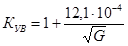
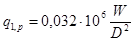
W - момент сопротивления продольного (вдоль трубы) сечения брутто стенки на единицу длины трубы, см3/см;
D - диаметр трубы по средней линии гофров, см;
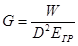
Егр - компрессионный модуль деформации грунта засыпки, принимаемый на основе компрессионных испытаний в одометре при интервале давлений 0,5-1 кгс/см2.
Перед компрессионными испытаниями грунт требуется уплотнить до 0,95 максимальной стандартной плотности.
Типовой проект должен предусматривать модуль общей деформации грунта засыпки в интервале 50-600 кгс/см2.
1 Гофрированные трубы диаметром от 1 до 3 м из волнистой стали с гофром 130×32,5 мм и толщиной листа от 1,5 до 2,5 мм в упругой грунтовой среде с модулем деформации в пределах от 50 до 600 кгс/см2 можно не проверять на общую устойчивость формы поперечного сечения, так как несущую способность таких труб лимитируют другие расчетные условия.
2. Проверка общей устойчивости формы поперечного сечения трубы
Расчет трубы на общую устойчивость формы поперечного сечения производят из условия сжатия трубы равномерно распределенным по ее периметру нормальным давлением грунта засыпки, принимаемым равным расчетной интенсивности q вертикального давления на трубу от постоянных и временных нагрузок. Условие устойчивости удовлетворяется неравенством
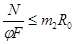
где
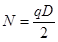
F - площадь продольного сечения стенки на единицу длины трубы см2/см;
m2 - коэффициент условий работы, учитывающий условность расчетной схемы и начальные несовершенства конструкции, принимается равным 0,7;
R0 - основное расчетное сопротивление стали при действии осевых сил, кгс/см2;
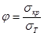
σт - предел текучести стали, кгс/см2;
σкр - критическое напряжение в стенке трубы, кгс/см2, которое следует принимать:
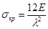
σкр = a - bλ, если λ0/2 < λ < λ0;
σкр = σт, если λ ≤ λ0/2;
постоянные а и b, а также предельное значение гибкости λ0 принимаются в зависимости от марки стали: для стали 15сп (σп.ц. = 2000 кгс/см2; σт = 2400 кгс/см2): а = 2800 кгс/см2; b = 7,14 кгс/см2; λ0 = 112; для стали 09Г2Д (σп.ц. = 2600 кгс/см2; σт = 3100 кгс/см2): а = 3600 кгс/см2; b = 10,2 кгс/см2; λ0 = 98; Е=2,1∙106 кгс/см2 - модуль упругости стали;
σп.ц. - предел пропорциональности стали;
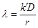
r - радиус инерции продольного сечения стенки трубы, см;
k'
- коэффициент гибкости, принимаемый по табл. 1 в
зависимости от геометрического параметра 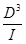
Таблица 1
|
кгс/см2 |
Коэффициент гибкости k' при геометрическом параметре 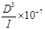 |
|||||||
|
0,2 |
0,3 |
0,5 |
1 |
2 |
5 |
10 |
20 |
|
|
50 |
0,893 |
0,850 |
0,780 |
0,663 |
0,532 |
0,445 |
0,366 |
0,314 |
|
100 |
0,814 |
0,755 |
0,663 |
0,532 |
0,468 |
0,366 |
0,314 |
0,264 |
|
200 |
0,703 |
0,629 |
0,532 |
0,468 |
0,394 |
0,314 |
0,264 |
0,222 |
|
300 |
0,629 |
0,551 |
0,494 |
0,425 |
0,352 |
0,281 |
0,239 |
0,202 |
|
400 |
0,573 |
0,512 |
0,468 |
0,394 |
0,332 |
0,264 |
0,222 |
0,188 |
|
500 |
0,532 |
0,494 |
0,445 |
0,366 |
0,314 |
0,250 |
0,211 |
0,178 |
|
600 |
0,512 |
0,477 |
0,425 |
0,352 |
0,300 |
0,239 |
0,202 |
0,169 |
3. Определение предельных деформаций поперечного сечения трубы
Предельное относительное увеличение горизонтального диаметра трубы ΔD'пред (в %), отвечающее моменту предельного статического равновесия рассчитываемой системы, определяют по формуле
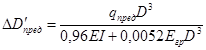
где qпред = 1,1qp - нормативная несущая способность трубы, кгс/см2;
Е = 2,1∙106 кгс/см2 - модуль упругости стали;
I - момент инерции продольного сечения стенки на единицу длины трубы, см4/см.
Если подсчитанная деформация ΔD'пред (в см) не удовлетворяет уcловию
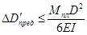
то ее значение уточняют, определяя по формуле
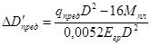
где Mпл = Wплσт - изгибающий момент в стенке трубы, соответствующий образованию пластического шарнира, кгс∙см/см;
Wпл - пластический момент сопротивления продольного сечения стенки на единицу длины трубы, см3/см (значения Wпл гофрированного листа 130×32,5 мм приведены в табл. 2);
σт - предел текучести: 2400 кгс/см2 для медистой стали 15сп и 3100 кгс/см2 для стали 09Г2Д.
По этим же формулам может быть вычислена деформация горизонтального диаметра для любой величины (но не более qпред) действующей на трубу нагрузки.
Предельное относительное уменьшение вертикального диаметра ΔDпред определяют через деформацию горизонтального диаметра
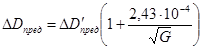
Значения предельных деформаций поперечного сечения трубы, соответствующие моменту предельного статического равновесия рассчитываемой системы, определяют в целях использования их в дальнейшем для оценки состояния построенного сооружения в эксплуатационных условиях.
Таблица 2
|
Площадь сечения F, см2/см |
Момент инерции I, cм4/см |
Момент сопротивления W, cм3/см |
Пластический момент сопротивления Wпл, cм3/см |
|
|
1,5 |
0,173 |
0,245 |
0,144 |
0,189 |
|
2,0 |
0,231 |
0,327 |
0,190 |
0,249 |
|
2,5 |
0,288 |
0,408 |
0,233 |
0,306 |
4. Расчет стыковых соединений
Расчет продольных стыков внахлестку с соединениями на обычных (невысокопрочных) болтах нормальной точности основан на предположении, что все сдвигающие усилия в стыке воспринимаются болтами.
Трение по контактным поверхностям соединяемых элементов не учитывается.
Расчет болтовых соединений продольных стыков производится на суммарные сдвигающие усилия от действия осевой сжимающей силы и изгибающего момента, соответствующего образованию пластического шарнира в стенке трубы.
Расчет ведется в предположении, что усилия между всеми болтами соединения распределяются равномерно.
Расчетное сдвигающее усилие на один болт S определяется по формуле
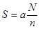
где n - число болтов в соединении на единицу длины трубы;
- расчетное осевое сжимающее усилие на единицу длины стенки трубы.
Здесь q - расчетная интенсивность равномерно распределенного по периметру поперечного сечения трубы нормального давления грунта засыпки, принимаемая равной расчетной интенсивности вертикального давления на трубу от суммарного воздействия собственного веса грунта насыпи и временной нагрузки;
а = 1,2 - коэффициент, учитывающий увеличение сдвигающего усилия в соединении от действия изгибающего момента.
Прочность болтового соединения проверяется по формулам:
при расчете на смятие кромок отверстий в соединяемых элементах
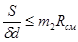
при расчете на срез болтов
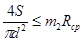
где δ - толщина листа стыкуемых элементов;
d - номинальный диаметр болта;
m2 - коэффициент условий работы соединения; для стыков со специальными шайбами (см. п. 4.42) m2 = 1,3 при расчете на смятие и m2 = 0,9 при расчете на срез;
Rсм, Rср - расчетные сопротивления для болтового соединения при работе кромок стыкуемых элементов на смятие и болта на срез (см. п. 2.4).
5. Ограничение гибкости трубы по требованиям транспортирования и установки конструкции
Для предупреждения чрезмерных деформаций гибкой стальной трубы в процессе ее возведения от воздействия на конструкцию грузоподъемных машин, монтажных механизмов и приспособлений, собственного веса самой конструкции, вспомогательных обустройств (настилов, подвесных подмостей) и т.п. должно
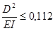
6. Расчет осадок труб и назначение строительного подъема
Расчет осадок труб для точек под осью насыпи следует производить по графику (рис. 1), определяя расчетную осадку Sp по формуле
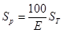
где Sт - осадка основания при модуле деформации грунта Е = 100 кгс/см2 (см. рис. 1).
Исходными параметрами для расчета осадок должны быть: модуль деформации, объемная масса грунта и мощность геологических слоев в основании, высота насыпи.
Осадка труб на многослойном основании рассчитывается путем суммирования осадок в пределах каждого слоя.
Расчетную осадку Sp под осью насыпи следует сравнить с предельно допустимой осадкой Sд, определяемой по формуле
Sд = 0,5Sp + 0,75iL,
где iL - разница отметок лотка трубы на входе и выходе (i - уклон, L - длина трубы).
Примечание. Формула применима для уклонов труб до 0,05, предусмотренных в п. 1.7 настоящей Инструкции.
В случае, если расчетная осадка превышает величину Sд, необходимо принять меры по изменению проектного решения, в первую очередь рассматривая варианты увеличения уклона лотка трубы или толщины подушки, либо переходить к другой конструкции водопропускного сооружения.
Строительный подъем назначают, определяя ординату под осью насыпи по формуле
Δ = Sp - 0,25iL,
которая не должна превышать величины 0,5 (Sp + iL).
Рис. 1. Расчетный график для определения осадок труб:
Sт - осадка основания при модуле деформации грунта 100 кгс/см2; H - высота насыпи; Z - расстояние от нижней границы рассматриваемого слоя до поверхности основания; 1 - при однородном основании и γ = 1 т/м3; 2 - то же при γ = 1,7 т/м3; 3 - при неоднородном основании и Z = 2÷18 м
Пример. Исходные данные: труба - D = 1,5 м; L = 46,4 м; i = 0,005; насыпь - b = 3,2 м; H = 10 м; 1 : m = 1 : 2; B = 23,2 м; γ = 1,9 т/м3; основание - среднее γ0 = 1,7 т/м3; слой I - Hсл = 4 м, E1 = 60 кгс/см2; слой II - Hсл = 7 м; E2 = 100 кгс/см2; слой III с глубины 11 м - Е3 = 150 кгс/м2 (рис. 2).
Решение. 1. Считая основание однородным с Е = 150 кгс/см2
и пользуясь графиком (см. рис. 1, кривая 2), по H = 10 м при
γ0 = 1,7 т/м3 находят осадку основания под осью пути
при Е = 100 кгс/см2 Sт''' =17,4
см, тогда
осадка при Е = 150 кгс/см2 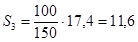
Рис. 2. Исходные данные к примеру расчета (размеры в метрах)
2. Для слоя мощностью Z2 = 11 м при Е = 100 кгс/см2 определяют величину дополнительной осадки (в связи с меньшим модулем деформации)
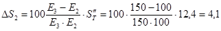
Значение Sт'' = 12,4 получают по графику для H = 10 м и Z2 =11 м (см рис. 1, кривые семейства 3).
3. Для верхнего слоя мощностью 4 м с E1 = 60 кг/см2 определяют
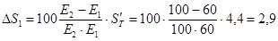
Значение Sт' = 4,4 см получают по графику для H = 10 м и Z1 = 4 м (кривые семейства 3).
4. Суммируя, находят расчетную осадку:
Sр = S3 + ΔS2 + ΔS1 = 11,6 + 4,l + 2,9 = 18,6 см.
5. По известным Sр = 18,6 см и iL = 23 см находят значение предельно допустимой осадки Sд = 0,5∙18,6 + 0,75∙23 = 26,5 см.
6. По тем же данным определяют ординату строительного подъема Δ = 18,6 - 0,25∙23 = 12,8 см, что в пределах допустимого значения, равного 0,5 (Sp + iL) = 0,5 (18,6 + 23) = 20,8 см.
Вывод. Осадки трубы не превысят предельно допустимых. Трубу следует проектировать со строительным подъемом, ордината которого под осью насыпи должна быть не менее 13 см и не более 21 см.
7. Расчет осадок труб на оттаивающих грунтах
Осадку труб Sp на оттаивающих грунтах рассчитывают по формуле
Sp = Sп + Sдоп,
где Sп - осадка предварительно оттаявшего слоя грунта толщиной hom, (рис. 3);
Sдоп - дополнительная осадка слоя грунта, оттаивающего в процессе эксплуатации трубы для слоя hдоп = Hо - hom (Hо - полная глубина оттаивания, м).
Рис. 3. Схема к расчету осадок труб на опаивающих грунтах
Глубину оттаивания определяют теплотехническим расчетом, а также по данным натурных наблюдений за аналогичными сооружениями.
Примечание. При наличии на глубине, меньшей чем Hо скальных или других несжимаемых грунтов (Е > 1000 кгс/см2) осадку рассчитывают для толщи основания, ограниченной их верхней поверхностью. Допускается при этом принимать Hо = 4,0 + 1,8H при объемной массе грунта основания γ0 = 1,0 тс/м3 и Hо = 3,0+1,4H при γ0 = l,7 тс/м3.
Осадку Sдоп слоя грунта, оттаивающего в процессе эксплуатации сооружения, для слоя hдоп = Hо - hom определяют по формуле
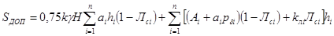
где k - безразмерный коэффициент, равный 0,75 (1 + b/B); ai - коэффициент сжимаемости i-го слоя оттаивающего грунта, см2/кгс; hi - толщина i-го слоя оттаивающего грунта, см; Лсi - разность между суммарной льдистостью i-гo слоя грунта и суммарной льдистостью образца грунта, взятого из этою слоя; n - число слоев, на которые разделяется при расчете толща оттаявшего (оттаивающего) грунта; Ai - коэффициент оттаивания i-го слоя грунта, характеризующий осадку грунта при его оттаивании без нагрузки; Pδi - давление в середине i-го слоя грунта, в кгс/см2 от собственного веса, равное 0,5γ0 (Zi + Zi-1) (здесь γ0 - объемная масса грунта основания, кгс/см3; Zi-1, Zi - расстояние от подошвы насыпи соответственно до кровли и подошвы i-го слоя, см); kлi - коэффициент, учитывающий неполное смыкание макропор при оттаивании мерзлого грунта, принимаемый в зависимости от средней толщины ледяных включений Δл: пpи Δл ≤ l cм kл = 0,7; при Δл ≥ 3 см kл = 0,9; при промежуточных значениях Δл коэффициент kл определяется интерполяцией.
Осадку Sп слоя грунта, предварительно оттаявшего на глубину hom, рассчитывают по формуле (2) при значениях Ai = 0; Лсi = 0 и значениях ai определяемых с учетом ожидаемой степени уплотнения оттаявшего грунта. При этом формула имеет вид
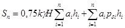
Расчет осадок производят для средней части трубы (высота насыпи Н) и ее концевых участков (H = 0).
Пример. Исходные данные: труба - D = 1,5 м; L = 39 м; i = 0,007; насыпь - b = 3,5 м; H = 10 м; B = 19,5 м; γ = 1,8 тс/м3; основание - γ0 = 1,7 тс/м3; H0 = 11 м; слой I - суглинок, предварительно оттаявший, a1 = 0,008, h1 = 4 м, слой II - суглинок, оттаивающий в процессе эксплуатации; a2 = 0,007; kл2 = 0,8; A2 = 0,018; Лc2 = 0,005; h2 = 2 м; слой III - то же, а3 = 0,006; kл3 = 0,7; A3 = 0,016; Лc3 = 0,005; h3 = 5 м.
Решение. Осадку рассчитываем по формулам (1)÷(3). Предварительно определяем
;
pδ1 = 0,5∙0,0017(0 + 400) = 0,34 кгс/см2;
pδ2 = 0,5∙0,0017(400 + 600) = 0,85 кгс/см2;
pδ3 = 0,5∙0,0017(600 + 1100) = 1,45 кгс/см2.
Осадка под средней частью трубы:
а) предварительно оттаявшего слоя грунта
Sп = 0,75∙0,88∙0,0018∙1000∙0,008∙400+0,008∙0,34∙400 = 4,9 см;
б) слоев грунта, оттаивающих в процессе эксплуатации,
Sдоп = 0,75∙0,88∙0,0018∙1000[0,007∙200(1 - 0,005) + 0,006∙500(1 - 0,005)] + [(0,018 + 0,007∙0,85)∙(1 - 0,005) + 0,8 - 0,005]200 + [(0,016 + 0,006∙1,45)∙(1 - 0,005) + 0,7∙0,005]500 = 25,3 см;
суммарная осадка S'p = 4,9 + 25,3 = 30,2 см. Осадка под концевыми участками трубы (Н = 0):
а) предварительно оттаявшего слоя грунта
Sп = 0,006∙0,34∙400 = 1,1 см;
б) слоев грунта, оттаивающих в процессе эксплуатации,
Sдоп = [(0,018 + 0,007∙0,85)∙(1 - 0,005) + 0,8∙0,005] - 200 + [(0,016 + 0,006 - 1,45)∙(1 - 0,005) + 0,7∙0,005] 500 = 20,1 см;
суммарная осадка S''p = 1,1 + 20,1 = 21,2 см. Расчетная осадка (см. п. 4.25 настоящей Инструкции)
см.
8. Ограничение поперечных деформаций трубы на стадии отсыпки и уплотнения боковых призм грунта
Расчетную нагрузку на трубу от строительных машин и уплотняемого грунта боковых призм следует условно принимать действующей в горизонтальной диаметральной плоскости нормально к поверхности трубы с обеих сторон, равномерно распределенной по длине образующей трубы с интенсивностью
, кгс/см (4)
Интенсивность действующего горизонтального давления е не должна превышать предельно допускаемое на трубу давление eтр т.е.
e ≤ eтр. (5)
Интенсивность предельно допускаемого (из условия трехпроцентной деформации номинального диаметра) давления eтр (в кгс/см) следует определять по формуле
, (6)
где Мпл - изгибающий момент (в кгс∙см/см) в стенке трубы на единицу ее длины, соответствующий образованию пластического шарнира и равный
Мпл = Wплσт, (7)
Wпл - пластический момент сопротивления продольного сечения стенки на единицу длины трубы, см3/см (см. табл. 2 настоящего приложения); σт - предел текучести стали, кгс/см2 (см. табл. 1 приложения 8). Если не удовлетворяется условие (5), следует предусматривать установку внутри трубы временных инвентарных креплений, рассчитывая их на действие перемещающейся вдоль трубы горизонтальной нагрузки екр (в кгс/см) интенсивностью действующей так же, как и нагрузка е, но на ограниченной длине 0,5 м по поверхности трубы симметрично относительно горизонтального диаметра.
екр = е - eтр, (8)
Приложение 12
ГИДРАВЛИЧЕСКИЕ РАСЧЕТЫ
Основные принципы гидравлических расчетов гофрированных труб
Гидравлический расчет гофрированных труб производится в соответствии с указаниями, изложенными в «Руководстве по гидравлическим расчетам малых искусственных сооружений» (М., «Транспорт», 1974)1, со следующими коррективами.
1Далее «Руководство по гидравлическим расчетам малых искусственных сооружений» будет называться кратко «Руководство».
1. Уклоны гофрированных труб должны быть равны или больше критических, но не меньше i = 0,01. В противном случае возможно снижение пропускной способности труб, уточняемое расчетом.
2. Коэффициенты расхода при безнапорном режиме для гофрированных труб следует принимать в зависимости от типа входного оголовка по табл. 1.
Таблица 1
|
Коэффициенты расхода |
|
|
Без оголовка (с вертикальным срезом и срезом параллельны откосу) |
0,33 |
|
Раструбный с углом раструбности αp = 20° |
0,36 |
При заданном типе входного оголовка расчетные расходы круглых труб, соответствующие заполнению входного сечения для железных дорог и для автомобильных, а также наибольшие расходы труб на железных дорогах, соответствующие заполнению , определяют по величине параметров расхода (табл. 2).
Таблица 2
|
Параметр расхода труб ПQ - при типах входных оголовков |
|||
|
без оголовка |
раструбный с углом раструбности αp = 20° |
||
|
с вертикальным срезом |
со срезом параллельно откосу |
||
|
0,75 |
0,275 |
0,35 |
0,305 |
|
0,9 |
0,360 |
0,41 |
0,440 |
|
1,0 |
0,415 |
0,45 |
0,495 |
Гидравлические расчеты нижнего бьефа труб, уложенных в теле насыпи
В зависимости от принятого варианта отвода воды расчеты выполняются в такой последовательности.
1. При отводе воды по берме и укрепленным откосам насыпи:
1.1. Назначают коэффициент заложения низового откоса бермы или насыпи mот. По условиям устойчивости откоса с учетом воздействия на него потока целесообразно принимать mот = 2.
1.2. Определяют согласно указаниям гл. IV «Руководства» глубину и скорость на выходе из трубы.
1.3. Определяют минимальный размер бермы Lmin вдоль потока по формуле, полученной из уравнения свободного падения тела
,
где υвых и hвых - соответственно средняя скорость и глубина на выходе из трубы; 1,2 - коэффициент запаса; g - ускорение силы тяжести.
1.4. По скорости υ = 1,3 υвых (учитывается увеличение скорости на берме за счет растекания) определяют согласно табл. II-6 «Руководства» тип укрепления бермы.
1.5. Находят ширину растекания потока на берме и откосе насыпи
 ,
,
где Bраст - ширина растекания потока в створе, проекция расстояния которого от выхода из трубы равна х; D - диаметр трубы; Q - расход в сооружении; при этом наибольший расход (для железных дорог) подставляют без изменения, а расчетный для учета ошибки увеличивают на 30%; - эталонный расход, т.е. расход при прохождении которого критическая глубина в тpyбe hк = 0,75D; Lб - длина бермы.
1.6. Определяют среднюю глубину потока hпд у подошвы насыпи из уравнения Шези, считая (в запас), что на откосе установится равномерный режим течения, и заменяя истинное поперечное сечение потока равновеликим прямоугольником:
,
где n - коэффициент шероховатости, принимаемый для бетонных укреплений равным 0,016; mот - коэффициент заложения низового откоса бермы или насыпи
1.7. Находят среднюю скорость потока у подошвы откоса
.
1.8. По скорости у подошвы насыпи υпд согласно табл. II-6 «Руководства» определяют тип укрепления откоса бермы (насыпи) и укрепления, расположенного у подошвы насыпи.
1.9. Назначают тип выходного русла за подошвой насыпи по рис. VI-1 «Руководства».
1.10. Назначают конструктивно длину укрепления у подошвы насыпи (размер вдоль потока)
L = Dэ,
где Dэ - эквивалентный диаметр трубы; для одноочковых круглых труб Dэ = D, для многоочковых (nт - число очков).
1.11. Определяют глубину размыва у подошвы насыпи для принятого типа выходного русла согласно указаниям гл. VI «Руководства».
1.12. По глубине размыва назначают глубину заделки концевой части укрепления, причем для расчетного расхода глубина заделки увеличивается на 20% (учет ошибки в расходе).
2. При сбросе воды на берму и откос насыпи, отсыпанной из камня:
2.1. Определяют скорость потока на выходе из трубы (см. п. 1.2 данного приложения).
2.2. Устанавливают минимальный средний диаметр наброски dн из которой может быть отсыпана низовая часть насыпи по формулам:
для однородных частиц
;
для горной массы
,
где dmax - диаметр наиболее крупных частиц, которых в каменной наброске более 5%; d - средний диаметр частиц наброски.
2.3. Определяют размер бермы вдоль потока (см. п. 1.3 данного приложения).
2.4. Назначают минимальную длину участка насыпи, отсыпанной из камня, Lнас ≈ 10D.
2.5. Проверяют возможность разрушающей фильтрации в основании насыпи согласно гл. VII «Руководства» и при необходимости устраивают обратный фильтр.
2.6. У подошвы насыпи закладывают рисберму. Размеры ее назначают конструктивно.
Приложение 13
(к п. 4.19)
ТЕМПЕРАТУРНЫЕ РАСЧЕТЫ В ГРУНТАХ ОСНОВАНИИ ТРУБ
ИЗ ГОФРИРОВАННОГО МЕТАЛЛА
1. Температурные расчеты являются приближенными и выполнены для характерных районов БАМа и севера Западной Сибири, расположенных в зонах распространения вечномерзлых грунтов. Допускается применять их и для других районов вечной мерзлоты, имеющих аналогичные условия.
(Измененная редакция, Дополнение № 1, 2).
2. Температурные расчеты выполнены для следующих условий:
а) примыкающая к трубе территория включает три зоны (см. рисунок):
зона 1 - с ненарушенной естественной поверхностью;
зона 2 - с нарушенной поверхностью, оголенной от растительного и торфяного покрова, расположенная вдоль насыпи;
зона 3 - насыпь без растительного покрова с трубой;
б) фильтрация под сооружением отсутствует; водоток временного действия, несущий расходы только в период половодья;
в) температурные расчеты выполнены для установившегося режима через 15 лет после строительства на момент максимального протаивания грунтов (октябрь).
1Под расчетной глубиной оттаивания грунта под сооружением подразумевается наибольшая глубина, на которую протаивает грунт в указанных выше сечениях через 15 лет после возведения сооружения.
Данные расчеты допускается применять для условий:
температура воздуха среднегодовая tв = -3,7÷-9,4°С;
температура вечномерзлых грунтов t0 = -1÷-3°С;
среднегодовая высота снежного покрова hсн = 0,2÷0,5 м;
грунт деятельного слоя - супесь с влажностью W = 30÷40%;
грунты основания, расположенные ниже деятельного слоя, -любые, включая скалу;
грунты насыпи - несвязные;
ширина зоны 2 с нарушенной поверхностью (см. рисунок) а = 15÷40 м;
диаметр трубы d = l,5÷3 м;
высота насыпи при d = l÷2 м H = 3÷10 м; при d = 2,5÷3 м H = 4÷10 м;
для севера Западной Сибири высота насыпи при d = 1÷2 м Н = 3÷4 м; при d = 2,5÷3,0 м Н = 4 м;
теплоизоляция вокруг труб из пенопласта толщиной 0,1 м, объемной массой 0,04 т/м3 - для варианта, приведенного на рисунке (в).
(Измененная редакция, Дополнение № 1, 2).
4. Расчетная глубина оттаивания под трубой ξ для других показателей, не охваченных условиями п. 3, вычисляется приближенно следующим образом:
а) в зависимости от вида грунта деятельного слоя она определяется по формуле
ξ = ξэkk1,
где ξэ - глубина оттаивания эталона, которая находится по графику (см. рисунок); К - поправочный коэффициент; К1 с учетом снежных заносов для севера Западной Сибири принимается в зависимости от температуры вечномерзлых грунтов до начала строительства (t0) по таблице
|
Глубина оттаивания в характерных сечениях (см. рисунок), м |
Температура вечномерзлых грунтов t0, °C |
||
|
минус 1 |
минус 3 |
минус 5 |
|
|
x1; x2 x3 |
1,4 0,4 |
1,2 0,4 |
0,8 0,4 |
Промежуточные значения x принимаются по интерполяции.
Коэффициент k ориентировочно принимается: для суглинка (влажностью Wс = 30 – 20 %) k = 0,9; для песчаных грунтов (влажностью Wс = 15 - 20 %) k = l,25 для районов со среднегодовой температурой воздуха, равной или меньшей минус 6,5°С; k = 1,35 для районов со среднегодовой температурой воздуха минус 3,7°С;
б) в случае отсутствия зоны 2 с нарушенной поверхностью (см. рисунок) глубина оттаивания у оголовка трубы ξ2 принимается равной глубине оттаивания под трубой в центре насыпи ξ3 (для севера Западной Сибири не применяется).
в) при выполнении пп. 4.19а; 4.22; 5.2 x1 берется по графикам с поправочным коэффициентом 0,7.
(Измененная редакция, Дополнение № 1, 2).
Графики для определения расчетной глубины протаивания грунтов (ξ1, ξ2, ξ3) в зависимости от среднегодовой температуры tв воздуха ξ = f(tв):
а - труба, продуваемая в зимний период; б - труба, не продуваемая в зимний период, в - труба непродуваемая с теплоизоляцией из пенопласта толщиной 10 см (вокруг трубы); г - схемы размещения исследуемых зон; 1 - tв = -3,7°C (Усть-Кут); 2 - tв = 6,5°C (Тында); 3 - tв = 9,4°С (Чульман); 4 - насыпь; 5 - труба; 6 - ось насыпи
5. Для ответственных объектов, имеющих сложные мерзлотные условия, сложные конструкцию и эксплуатацию, допускается выполнять индивидуальные теплотехнические расчеты по прогнозу нестационарного температурного поля. В этом случае рекомендуется использовать программу (для трехмерной области PQ021), разработанную ЦНИИСом.
(Измененная редакция, Дополнение № 1, 2).
Приложение 14
(к п. 4.45)
ОПРЕДЕЛЕНИЕ УДЕЛЬНОГО СОПРОТИВЛЕНИЯ ГРУНТА
Определение удельного сопротивления грунта1 производится с помощью симметричной четырехэлектродной установки (см. рисунок), размещенной в одну линию, которая для проектируемого сооружения должна совпадать с осью трассы, а для уложенного в землю сооружения должна проходить параллельно последнему в 2 - 4 м от него.
1Извлечение из ГОСТ 9.015-74. Измерение электросопротивления следует производить в период дождей или с увлажнением грунта.
Схема для определения удельного сопротивления грунта
Расстояние между питающими электродами (AB) должно находиться в следующих пределах:
2h ≤ AB ≤ 4h,
где h - глубина прокладки подземного сооружения.
Величина удельного сопротивления грунта ρ, Ом·м, определяется по формуле
,
где ΔU - разность потенциалов, измеряемая между приемными электродами MN, В; I - величина тока, протекающего через цепь питающих электродов АВ, А; k - коэффициент, величина которого определяется по формуле
,
где l1, l2, l3 - расстояния между электродами, м.
В качестве четырехэлектродной установки могут быть использованы измеритель заземления МС-08; измеритель заземления М-416; полевой электроразведочный потенциометр ЭП-ПМЭ.
В случае измерения удельного сопротивления грунта прибором МС-08 или М-416 расстояния между электродами принимаются одинаковыми и равными а; сопротивление грунта определяется по формуле:
ρ = 2πaR,
где R - сопротивление по показаниям прибора, Ом.
Приложение 15
(к пп. 5.1; 5.26; 5.56; 5.58; 5.59; 5.72; 6.4)
ТЕХНИЧЕСКИЕ ХАРАКТЕРИСТИКИ ИНСТРУМЕНТА,
МАШИН, МЕХАНИЗМОВ И ОБОРУДОВАНИЯ
1. Электрический гайковерт ИЭ-3101
Наибольший диаметр резьбы, мм............................................................ 20
Наибольший момент затяжки, кг·см....................................................... 25
Мощность электродвигателя, кВт........................................................... 0,27
Напряжение, В........................................................................................... 36
Частота тока, Гц......................................................................................... 200
Габаритные размеры, мм.......................................................................... 427×138×75
Масса, кг..................................................................................................... 4,4
2. Пневматический гайковерт ИП-3103
Наибольший диаметр резьбы, мм............................................................ 20
Наибольший момент затяжки, кгс·м....................................................... 20
Давление сжатого воздуха, кгс/см2.......................................................... 5
Расход воздуха, м3/мин............................................................................. 0,9
Габаритные размеры, мм.......................................................................... 214×185×80
Масса, кг..................................................................................................... 2,5
3. Ручной инструмент для монтажа труб (рис. 1)
4. Электротрамбовки
|
Показатели |
Трамбовки марок |
|
|
ИЭ-4505 |
ИЭ-4502 |
|
|
Производительность по среднезернистому песку при коэффициенте уплотнения 0,87, м3/ч |
13 |
45 |
|
Глубина уплотнения за два прохода, см |
20 |
40 |
|
Частота ударов в минуту, не менее |
560 |
560 |
|
Диаметр (или размеры прямоугольника) трамбующей части башмака, мм |
200 |
350×420 |
|
Напряжение, В |
220 |
220 |
|
Род тока |
Переменный трехфазный |
Переменный трехфазный |
|
Частота тока, Гц |
50 |
50 |
|
Номинальная потребляемая мощность, Вт |
600 |
1600 |
|
Номинальный ток, А |
2,8 |
6 |
|
Режим работы |
S1 Продолжительный по ГОСТ 183-66 |
S1 Продолжительный по ГОСТ 183-66 |
|
Тип электродвигателя |
Асинхронный, трехфазный с короткозамкнутым ротором |
Асинхронный, трехфазный с короткозамкнутым ротором |
|
Габаритные размеры, мм: |
||
|
длина |
255 |
970 |
|
ширина |
440 |
475 |
|
высота |
785 |
950 |
|
Масса без кабеля, кг, не более |
27 |
81,5 |
Рис. 1. Ручной инструмент для монтажа труб (отгиб крючка выполнен в плоскости, перпендикулярной плоскости чертежа):
1 - ключ торцовый (2 шт.); 2 - оправка (2 шт.); 3 - оправка (1 шт.); 4 - ломик (1 шт.); 5 - домир (1 шт.); 6 - ломик (1 шт.); 7 - крючки (4 шт.)
5. Грунтоуплотняющие машины виброударного действия для стесненных условий
|
Показатели |
Машины |
||
|
Д-606 |
Д-535 |
||
|
Тип машины |
Навесная на бульдозерах с ходоуменьшителями |
||
|
Мощность, л. с. |
75 |
75 |
|
|
Транспортная скорость передвижения, км/ч |
10,85 |
11,60 |
|
|
Рабочая скорость передвижения, м/ч |
300-1570 |
300-800 |
|
|
Тип рабочего органа |
Вибромолот |
Вибромолот |
|
|
Число рабочих органов |
Один |
Один |
|
|
Частота ударов рабочего органа и минуту |
360 |
360 |
|
|
Ширина полосы трамбования, см |
80 |
80 |
|
|
Масса ударной части вибромолота, кг |
680 |
680 |
|
|
Глубина уплотнения за один проход до плотности K = 0,95, см: |
|||
|
суглинистого грунта |
40 |
40 |
|
|
песчаного грунта |
50 |
50 |
|
|
Производительность машины, м3/ч |
100 |
100 |
|
|
Масса машины, полностью заправленной, кг |
9500 |
9500 |
|
|
Габаритные размеры (в рабочем положении), мм: |
|||
|
длина |
6210 |
6150 |
|
|
ширина |
2550 |
2600 |
|
|
высота |
2304 |
2325 |
|
|
Обслуживающий персонал, чел. |
Один |
Один |
|
|
Величина выноса рабочего органа за след гусениц трактора (по ходу трактора), см: |
|||
|
вправо |
50 |
50 |
|
|
влево |
20 |
20 |
|
6. Машина с двумя виброударными рабочими органами
|
Тип машины |
Навесная на базе трактора Т-100 МГП или Т-130-Г-1 |
|
Мощность, л. с. |
108 (160) |
|
Тип рабочих органов |
Механические вибромолоты |
|
Число рабочих органов, шт. |
2 |
|
Частота ударов рабочих органов в минуту |
До 360 |
|
Ширина полосы трамбования, м |
1.9 |
|
Рабочие скорости перемещения, м/ч |
370-1050 |
|
Транспортные скорости, км/ч |
До 10 |
|
Глубина уплотнения за один проход до плотности K = 0,95, см: |
|
|
суглинистого грунта |
60 |
|
песчаного грунта |
90 |
|
Производительность, м/ч |
400 |
|
Габаритные размеры, мм: |
|
|
длина |
8500 (7730) |
|
ширина |
3940 (3200) |
|
высота |
3059 (3087) |
|
Масса машины, кг |
22000 (23500) |
Примечание. В скобках даны размеры машины, смонтированной на базе трактора Т-130-Г-1.
7. Дизель-трамбовочная машина УМТС-2
|
Тип машины |
Навесная на тракторе Т-100 МГП |
|
Тип рабочих органов |
Дизель-трамбовка |
|
Число рабочих органов, шт. |
4 |
|
Число ударов в минуту |
68-72 |
|
Глубина уплотнения грунтов до плотности K = 0,95 (за один проход), см: |
|
|
связных |
50 |
|
несвязных |
75 |
|
Ширина уплотняемой полосы, м |
2,3 |
|
Производительность, м3/ч |
250 |
|
Величина смещения полосы трамбования за габарит гусениц, см |
100 |
|
Рабочие скорости передвижения, м/ч |
90-260 |
|
Транспортные скорости передвижения, км/ч |
До 10 |
|
Габаритные размеры, мм: |
|
|
длина |
1010 |
|
ширина |
4150 |
|
высота |
3650 |
|
Масса, т |
19 |
8. Каток Д-551А
|
Тип катка |
Полуприцепной к одноосному тягачу, секционный на пневматических шинах |
|
Тип тягача |
Одноосный колесный марки МОАЗ-546 |
|
Мощность двигателя, л. с. |
240 |
|
Количество колес: |
|
|
на катке |
4 |
|
на тягаче |
2 |
|
Размер пневмошин: |
|
|
на тягаче |
26,5-25 |
|
на катке |
21-28 |
|
Давление воздуха в шинах, кг/см2: |
|
|
на катке |
4-4,25 |
|
на тягаче |
3 |
|
Масса катка, т: |
|
|
с балластом |
38 |
|
без балласта |
20,4 |
|
Масса тягача (сухого), т |
9,4 |
|
Ширина уплотняемой полосы, м |
2,8 |
|
Толщина уплотняемого слоя в рыхлом состоянии, м |
0,45 |
|
Необходимое число проходов |
2-6 |
|
Скорость передвижения, км/ч: |
|
|
рабочая |
До 15 |
|
транспортная |
25-45 |
|
Габаритные размеры катка с тягачом, мм: |
|
|
длина |
9670 |
|
ширина |
3280 |
|
высота |
3050 |
|
Габаритные размеры тягача, мм: |
|
|
длина |
4500 |
|
ширина |
3160 |
|
высота |
3015 |
9. Красконагнетательные баки для грунтовки
|
Показатели |
Баки марок |
||
|
С-764 (БКП-40)* |
С-411А (БКП-63)* |
С-865 (БКП-100)* |
|
|
Емкость, л |
40 |
63 |
100 |
|
Наибольшее рабочее давление воздуха, кгс/см2 |
4 |
4 |
4 |
|
Диапазон регулирования давления воздуха редуктором, кгс/см2 |
0,5-4 |
0,5-4 |
0,5-4 |
|
Количество подключаемых краскораспылителей, шт. |
2 |
2 |
2 |
|
Габариты, мм |
790×480×450 |
1030×480×450 |
1020×590×525 |
|
Масса, кг |
32 |
37 |
60 |
*Тип БКП по ГОСТ 11115-74.
10. Пистолеты-распылители
|
Показатели |
Пистолеты моделей |
|
|
О-45 |
С-592 |
|
|
Вязкость лакокрасочного материала по ВЗ-4, с |
50 |
200 |
|
Производительность наибольшая, м2/ч |
400 |
75 |
|
Расход сжатого воздуха, м3/ч |
26 |
16 |
|
Давление воздуха, ати |
3-4 |
3,5 |
|
Давление в баке с краской, ати |
2-3 |
3 |
|
Масса, кг |
0,63 |
0,63 |
|
Габариты, мм: |
||
|
длина |
180 |
165 |
|
ширина |
45 |
45 |
|
высота |
220 |
210 |
11. Передвижная битумная установка ПКБ Главстроймеханизации
|
База |
Автоприцеп 1-АГ-1,5 |
|
Полезная емкость, м3 |
0,9 |
|
Производительность за одну заправку при двухмиллиметровой толщине покрытия, м2 |
400 |
|
Температура расплавленной битумной мастики,°С |
160-180 Мазут малосернистый |
|
Вид топлива для разогрева |
|
|
Способ нанесения битумной мастики |
Насосом через форсунку |
|
Давление для распыления топлива, ати |
До 4 |
|
Масса, кг |
1486 |
|
Габаритные размеры, мм: |
|
|
длина |
3000 |
|
высота |
3200 |
|
ширина |
2100 |
12. Установки для нанесения грунтовки
|
Показатели |
Установки марок |
|
|
С-562 |
С-562А |
|
|
Число бачков, шт. |
1 |
2 |
|
Емкость бачков, л |
20 |
40 |
|
Производительность, м2/ч |
100 |
200 |
|
Рабочее давление воздуха, кгс/см2 |
7 |
7 |
|
Расход воздуха, м3/ч |
0.5 |
0,7 |
|
Масса установки без шлангов, кг |
17 |
35 |
|
Длина удочки, мм |
1500 |
1500 |
|
Масса удочки, кг |
1,5 |
1,5 |
|
Размеры воздушного шланга: |
||
|
диаметр, мм |
9 |
9 |
|
длина, м |
9 |
9 |
|
Размеры материального шланга: |
||
|
диаметр, мм |
12 |
12 |
|
длина, м |
9 |
9 |
|
Изготовитель |
Вильнюсский завод строительно-отделочных машин |
|
13. Пневмодрель ИП-1007
|
Мощность на шпинделе, л. с. |
0,8 |
|
Частота вращения, об/мин |
450 |
|
Масса, кг |
2,8 |
14. Битумоплавильная установка УБК-81
|
Единовременная выдача мастики, т |
3,5 |
|
Производительность, кг/ч |
1200 |
|
Частота вращения мешалки, об/мин |
20 |
|
Производительность шестеренчатого насоса, л/мин |
400 |
|
Мощность электродвигателя, кВт |
15,8 |
|
Проектная организация |
СКБ Газстроймашина |
|
Изготовитель |
Киевский ремонтно-механический завод |
15. Пистолет-распылитель Р-68 конструкции ЦНИЭПжилища
|
Давление воздуха, ати |
2,5-3,0 |
|
Производительность пистолета, м2/ч |
90-400 |
|
Расход воздуха, м3/ч |
100 |
|
Габариты, мм |
247×396×160 |
|
Масса, кг |
2,2 |
Материалом для изготовления служит гофрированная сталь. Размеры указаны на рис. 2.
Рис. 2. Фасонный шпатель для нанесения наполненных мастик способом подливки (размеры в миллиметрах):
1 - деревянная обшивка толщиной 5 мм; 2 - резина толщиной 5 мм
17. Рекомендуемые машины, оборудование и инструменты для строительства гофрированных труб диаметром 1,5 и 2 м
|
Наименование машин, инструментов |
Количество |
|
Экскаватор с ковшом емкостью 0,25 - 0,30 м3 |
1 |
|
Бульдозер |
1 |
|
Автокран грузоподъемностью 5т |
1 |
|
Передвижная электростанция мощностью 10-15 кВт |
1 |
|
Гайковерты электрические массой до 5 кг |
2 |
|
Комплект ручных инструментов (см. п. 3 настоящего приложения) |
2 |
|
Грунтоуплотняющая машина на базе трактора для стесненных мест или полуприцепной самоходный пневмокаток массой 25-30 т |
1 |
|
Электротрамбовки массой до 30 кг |
2 |
|
Комплект ручных инструментов для нанесения защитного покрытия на стыки труб и устройства лотка (см. приложения 15 и 19) |
1 |
|
Комплект приборов для контроля плотности грунта (см. приложение 17) |
1 |
Приложение 16
(к п. 5.5)
Схема размещения и крепления секций металлических труб диаметром 1,5 м на автомашине ГАЗ-52-03:
1 - тросы металлические с прокладками для предотвращения повреждения оцинковки; 2 - продольные брусья (25×25 см, l = 124 + 100 + 100 см); 3 - поперечные брусья (20×20 см, l = 216 см) с вырезом в средней части по радиусу 75 см и стрелкой 8 см; 4 - металлические скобы; 5 - петли из круглой стали диаметром 10 мм
Приложение 17
МЕТОДЫ КОНТРОЛЯ ПЛОТНОСТИ ГРУНТА
Определение плотности и влажности грунта засыпки плотномером-влагомером Н.П. Ковалева
Прибор (рис. 1), основанный на принципе гидростатического взвешивания, состоит из двух основных частей: сосуда и поплавка с трубкой. На трубке нанесены четыре шкалы для определения объемной массы раз личных грунтов.
Рис. 1. Схема плотномера-влагомера Н. П. Ковалева:
1 - верхняя крышка; 2 - замок; 3 - футляр; 4 - насадка; 5 - нож; 6 - трубка; 7 - поплавок; 8 - крючки; 9 - сосуд; 10 - тарировочный груз; 11 - резиновое кольцо; 12 - нижняя крышка; 13 - замок; 14 - режущий цилиндр
Шкалы с пометками «Ч», «П» и «Г» служат для определения объемной массы (плотности) соответственно сухих черноземных песчаных и глинистых грунтов. Шкала с пометкой «Вл.» предназначена для определения объемной массы влажных грунтов.
Поплавок-трубка соединяется с сосудом посредством трех замков между ними остается зазор 1-2 мм для свободного поступления воды в сосуд и выхода из него воздуха. В комплект прибора входят также режущий стальной цилиндр емкостью 200 мл для отбора проб грунта с ненарушенной структурой, нож и ведро-футляр, являющееся сосудом для воды при испытаниях и футляром для хранения прибора.
При определении объемной массы грунта с естественной влажностью берут пробу с ненарушенным сложением путем вдавливания стального режущего цилиндра в грунт. Цилиндр, полностью вдавленный в грунт, осторожно откапывают и лишний грунт срезают ножом по плоскостям цилиндра. Пробу грунта из режущего цилиндра пересыпают через воронку в поплавок прибора, который затем плавно погружают в ведро-футляр, наполненное водой. По шкале «Вл.», нанесенной на трубке поплавка определяют объемную массу влажного грунта γоб. Затем для установления объемной массы (плотности) скелета грунта γck пробу из поплавка прибора переносят без потерь в сосуд, доливая воду до 1/2 его объема, при этом грунт тщательно растирают до полного размокания комков деревянной ручкой ножа. Сосуд соединяют с поплавком и погружают в ведро-футляр, наполненное водой.
Через зазор между поплавком и сосудом вода из ведра заполняет свободное пространство в сосуде, а прибор погружается до уровня, по которому на соответствующей шкале находят плотность грунта
Влажность грунта (в %) вычисляют по формуле
.
Метод лунок
При возведении насыпи из каменных материалов, а также при наличии в грунте гравелистых частиц, щебенки, мерзлых комьев контроль за уплотнением грунта может осуществляться путем засыпки лунок сухим песком.
Для этого заготовляют сухой песок, просеянный через сито с отверстиями размером 2 мм (или отдельные фракции песка 0,5-1 мм 1-2 мм) и не содержащий пылеватых и глинистых частиц. Если такие частицы содержатся, их следует отмыть и песок высушить.
На уплотненном слое грунта выравнивают небольшую площадку и выкапывают лунку диаметром около 20 см, глубиной 10-15 см. Грунт из лунки тщательно собирают и взвешивают с точностью до 5 г (при выкапывании лунки не следует задевать края и боковые стенки ее рабочим инструментом, так как это может привести к увеличению объема лунки и искажению получаемых результатов).
Объем лунки определяют следующим образом. Над лункой устанавливают двойную жестяную воронку с основанием диаметром 25 см (рис. 2). В лунку и нижнюю воронку через верхнюю воронку насыпают сухой песок. Объем засыпаемого песка измеряют мерными стеклянными цилиндрами емкостью 0,1-1 л с точностью до 5 см3 (основной объем песка может быть засыпан в лунку любым мерным сосудом, остальную часть песка до полного заполнения лунки желательно засыпать небольшими мерными цилиндрами емкостью не более 0,1-0,25 л). Песок в цилиндр насыпают через обычную воронку без встряхивания. Вычитая из общего объема песка его объем, находящийся в воронке, получим объем песка в лунке, т.е. объем лунки.
Разделив массу грунта, извлеченного из лунки, на его объем, находят объемную массу влажного грунта γоб. Для определения влажности грунта необходимо высушить весь образец грунта, взятого из лунки. Если грунт содержит частицы крупнее 5 мм и из-за этого невозможно определить влажность всего образца грунта, то определяют влажность W' грунта с частицами менее 5 мм (отсеянного). При этом следует учитывать влияние на влажность образца грунта включений частиц крупнее 5 мм путем умножения полученного значения влажности W' отсеянного грунта на поправочный коэффициент.
Рис. 2. Воронка для определения плотности грунта по методу лунок
Тогда значение влажности W' для грунта с включением частиц крупнее 5 мм находят по формуле
, %,
где - поправочный коэффициент;
Р - содержание частиц крупнее 5 мм, %.
Объемную массу скелета грунта рассчитывают после определения влажности
по формуле
, г/см3.
Приложение 18
(к п. 5.22)
СОСТАВ, ПРОЧНОСТЬ И
ТЕХНОЛОГИЯ
ПРИГОТОВЛЕНИЯ ЦЕМЕНТНО-ГРУНТОВОЙ СМЕСИ
Для цементно-грунтовой смеси следует применять супеси, суглинки и глины, а в качестве вяжущего материала - портландцемент, удовлетворяющий требованиям ГОСТ 10178-62*. В качестве добавок применяют известь или NaOH, Nа2СО3, Na2SiO3. Расход цемента принимают 15-25%, добавок - 0,5-1,5% массы сухой смеси в зависимости от типа и состояния грунтов. Добавки извести, необходимые для кислых супесчаных грунтов (при рН, равном 3,5-6), составляют 1,5-2% массы сухой смеси. Предел прочности при сжатии водонасыщенных образцов грунта цементно-грунтовой смеси с добавками в возрасте 28 суток должен быть не менее 40 кгс/см2.
Введение добавок извести производят при частичном увлажнении (до 0,6-0,8 оптимальной влажности) и тщательном перемешивании до введения в грунт цемента. Смесь грунта с известью выдерживают в закрытой емкости сутки, после чего в нее вводят добавку-цемент и недостающее до оптимальной влажности количество воды.
Выбранная добавка извести является постоянной для данного грунта независимо от количества и состава других веществ, вводимых при укреплении грунта.
Приложение 19
СБОРНЫЕ ЛОТКИ ИЗ АСФАЛЬТОБЕТОНА И БЕТОНА
Технология приготовления асфальтобетонных смесей и изготовления из них блоков
При строительстве труб на автомобильных дорогах для приготовления смеси должны быть использованы притрассовые асфальтобетонные заводы, при строительстве железных дорог - существующие стационарные заводы.
Асфальтобетонную смесь для устройства защитных лотков следует готовить в асфальтобетонных машинах с принудительным перемешиванием типов Д-597, Д-597А, Д-508 и др. В случае небольших объемов работ асфальтобетонную смесь, целесообразно готовить в передвижных асфальтосмесительных установках типа ДС-65 производительностью 12 т/ч.
Рис. 1. Типы сборных асфальтобетонных блоков
Рис. 2. Конструкция кассеты с формами
Режим приготовления песчаной асфальтобетонной смеси типа литой должен обеспечивать однородность, которая достигается путем применения одних и тех же исходных материалов, точным дозированием их, соблюдением заданной температуры и режима перемешивания минеральных материалов с битумом. Время перемешивания асфальтобетонной смеси в смесителях должно быть не менее 120 с.
Температура готовой асфальтобетонной смеси при выпуске из мешалки в зависимости от марки битума должна при применении дорожных битумов составлять 150-170°С, а для строительных битумов - 180-200°С.
Все остальные технологические операции при приготовлении асфальтобетонной смеси следует выполнять в соответствии с «Инструкцией по строительству дорожных асфальтобетонных покрытий» (ВСН93-76).
Для приготовления сборных асфальтобетонных блоков (рис. 1) асфальтобетонную смесь загружают в металлические разборные формы (рис. 2). Перед загружением стенки форм обрабатывают смесью воды с керосином (1 : 1). Уплотнение смеси в формах осуществляют кратковременным вибрированием с пригрузом или прессованием под нагрузкой. Величина нагрузки может быть в пределах 5-50 кгс/см2. В случае отсутствия уплотняющих средств загруженную в формы смесь разравнивают и убирают излишек. Для быстрого остывания формы со смесью опускают в воду. Распалубка форм и извлечение готовых блоков должны производиться после полного остывания смеси.
Технология изготовления бетонных блоков
Размеры бетонных блоков принимают согласно рис. 1 настоящего приложения. Изготовление блоков следует организовывать на бетонных заводах или полигонах, находящихся вблизи строящейся дороги. Блоки следует изготовлять в разборной металлической опалубке (см. рис. 2). Бетонную смесь, загруженную в формы, уплотняют на вибростолах. Изготавливать блоки следует по технологии, разрабатываемой строительной организацией, в ведении которой находится завод или полигон.
Катионные битумные эмульсии
Катионная битумная эмульсия представляет собой однородную маловязкую жидкость, состоящую из битума, водных растворов эмульгатора (поверхностно-активное вещество - органическая кислота) и щелочного вещества. Состав и свойства эмульсии должны соответствовать ГОСТ 18659-73 и Техническим указаниям по приготовлению и применению дорожных эмульсий (ВСН 115-75).
Требования, предъявляемые к катионным эмульсиям, приведены ниже.
|
Скорость распада при смешении с кварцевым песком |
Быстрораспадающиеся, среднераспадающиеся или медленнораспадающиеся |
|
Количество порошка, %: |
|
|
для быстрораспадающихся |
Менее 50 |
|
для среднераспадающихся |
50-100 |
|
для медленнораспадающихся |
Более 100 |
|
Содержание битума с эмульгатором, %: |
50-60 |
|
Вязкость при температуре 20°С по вискозиметру ВУ, град. |
6-15 |
|
Вязкость при температуре 20°С по вискозиметру для нефтяных битумов с отверстиями 3 мм, с |
20-50 |
|
Водоустойчивость пленки из эмульсии на гранитном щебне |
Хорошая |
|
Однородность по остатку на сите с сеткой № 014, % |
Не более: 0,5 |
|
Устойчивость при хранении по остатку на сите с сеткой № 063, %: |
|
|
через 7 суток |
0,3-0,5 |
|
через 30 суток |
0,7-0,8 |
|
Устойчивость при транспортировании по времени встряхивания, ч |
Не менее 2 |
Каждую партию эмульсии, направляемую на место производства работ, сопровождают паспортом, в котором указывают: наименование и адрес предприятия-изготовителя, номер и дату составления паспорта; вид, класс и марку эмульсии, состав эмульгатора, результаты испытаний (глубину проникания иглы битума, использованного для приготовления эмульсии, содержание битума, вязкость эмульсии), дату приготовления эмульсии и срок хранения.
Эмульсии можно хранить как на месте их приготовления, так и на месте строительства. В обоих случаях лучшим способом является хранение в вертикальных цилиндрических емкостях. Во избежание загрязнения, а также испарения из эмульсии воды емкости должны плотно закрываться. Катионную эмульсию можно хранить не более трех месяцев при температуре воздуха не ниже 3°С.
Для транспортирования эмульсий могут быть использованы автогудронаторы, битумовозы, железнодорожные цистерны, цистерны емкостью 1-2 т, смонтированные на грузовых автомобилях, металлические бочки емкостью от 100 до 500 л.
Готовая эмульсия не относится к вредным веществам, и при обращении с ней специальных мер предосторожностей не требуется. В случае попадания эмульсии на одежду, лицо и руки ее следует быстро смыть холодной водой, а остатки битума снять керосином, соляровым маслом или бензином, а затем эти места промыть теплой водой с мылом.
ПРИЛОЖЕНИЕ 20
РАСЧЕТ ЖЕСТКОГО СЛОЯ
Расчет жесткого слоя следует выполнять по условию (рис. 1)
T ≥ P, (1)
где Р - горизонтальное усилие, передающееся от боковой стенки трубы на жесткий слой, определяемое по графикам на рис. 2-4;
T = Στj - сумма сил трения по верхней и нижней поверхностям жесткого слоя
T = 0,5B(q1f1 + q2f2), (2)
где q1,2 - нормальное давление от веса грунта засыпки соответственно по верхней и нижней поверхностям жесткого слоя, определяемое по СН 200-62;
f1,2 - коэффициент трения грунта засыпки соответственно по верхней и нижней поверхностям жесткого слоя, определяемый, например, по СН 200-62, п. 692; при f > tg φ, где φ - расчетный угол внутреннего трения грунта засыпки, принимают f = tg φ;
В - ширина жесткого слоя поперек трубы.
Пример. Проектируется труба диаметром 1,5 м из металла толщиной 2,5 мм. Высота насыпи Н = 8 м. Для засыпки трубы до уровня жесткого слоя используется мелкий песок (φ = 30°, tg φ = 0,577), выше жесткого слоя - супесь (φ = 20°, tg φ = 0,364). Средний фактический модуль деформации грунта засыпки, который может быть обеспечен при засыпке трубы, Е = 8 МПа (80 кгс/см2).
По графику на рис. 2б при Н = 8 м и Е = 8 МПа находим Р = 53 кН/м (53 кгс/см).
Требуется устройство жесткого слоя. Проектируем его из некондиционных бетонных элементов. По СН 200-62, п. 692 находим f2 = 0,4 < tg φ, f1 = 0,3 < tg φ. Давление от веса грунта засыпки в уровне горизонтального диаметра трубы равно q = γН3п = 0,0018(800 - 75)1,2 = 0,157 МПа (1,57 кгс/см2).
Принимая q1 = q2 = q, по формуле (3) находим
В запас принимаем В = 1,0 м.
Рис. 1. Схема для расчета жесткого слоя
Рис. 2. Графики усилий в жестком слое для труб диаметром 1,5 м на автодороге (нагрузка НК-80):
а - при δ = 2 мм; б - при δ = 2,5 мм; 1 - ограничение высоты насыпи по смятию кромок элементов труб из стали 15 сп; 2 - то же, из стали 09Г2Д
Рис. 3. Графики усилий в жестком слое для труб диаметром 2 м на автодороге (нагрузка НК-80):
а - при δ = 2 мм; б - при δ = 2,5 мм; 1 - ограничение высоты насыпи по смятию кромок элементов труб из стали 15 сп; 2 - то же, из стали 09Г2Д
Рис. 4. Графики усилий в жестком слое для труб диаметром 3 м при δ = 2,5 мм на автодороге (нагрузка НК-80):
1 - ограничение высоты насыпи по смятию кромок элементов труб из стали 15 сп; 2 - то же, из стали 09Г2Д
Приложение 20. (Введено дополнительно, Дополнение № 1).
СОДЕРЖАНИЕ